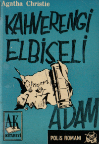

Agatha Christie
Kahverengi Elbiseli Adam (The Man In The Brown Suit)
(Arka Kapak)
Anne Beddingfeld, babasını kaybettikten sonra Londra'da yaşamaya karar verir. Ve günün birinde, içinde her zaman var olan macera tutkusu, Hyde Park’ın köşesindeki metro istasyonunda yaşadığı bir olayla canlanır. İstasyondaki bir adam rayların üstüne düşerek ölmüştür. Ama ne var ki olay göründüğü gibi değildir.
Anne, kaza olmadığına inandığı olayın peşini bırakmaz ve elindeki tek ipucuyla "Albay" olarak da bilinen katilin asıl kimliğini ortaya çıkarmaya çalışır. Ancak
bilmediği şey Albay'ın da onun peşinde olduğudur.

TÜRKÇESİ ÇİĞDEM ÖZTEKİN
E. A. B.'ye Yolculuğun anısına, belki bir gün aslan öyküleri de yazarım.
GİRİŞ
Paris'te büyük heyecan yaratan Rus balerin Nadina, kendini coşkulu alkışların ve tezahüratın büyüsüne kaptırarak tekrar tekrar eğilip selam verdi. Çekik siyah gözleri daha da kısılmış, ince uzun kırmızı dudakları hoş bir gülümsemeyle yukarı doğru kıvrılmıştı. Perde kırmızı mavi ve mor renklerin hâkim olduğu gösterişli dekor'u hışırdayarak kapatırken Fransız seyirci hâlâ büyük bir coşkuyla hayranlığım dile getiriyordu. Balerin adeta dans eden mavi ve oranj tüllerin arasından geçip sahneden ayrıldı. Kuliste sakallı bir adam tarafından heyecanla kucaklandı. Bu adam, onun menajeriydi.
"Muhteşemdin, petite muhteşem!" diye haykırdı adam. "Bu akşam kendini bile aştın." Ve onu içtenlikle iki yanağından öptü.
Madam Nadina böylesi coşkulara, tezahüratlara alışkındı. Pek fazla önemsemeden doğruca soyunma odasına geçti. Odanın her tarafı hayranları tarafından gönderilmiş buketler ve çiçek sepetleriyle doluydu, askılarda ise her biri bir tasarım harikası sayılabilecek muhteşem giysiler asılıydı. Odaya rahatsız edici şekilde çiçek ve parfüm kokusu hâkimdi. Madamın oda hizmetçisi Jeanne, hanıma övgü dolu sözcüklerle yaklaştı. Ancak kapının çalınması bu övgü dolu sözleri yarıda kesti. Kapıyı açan Jeanne elinde bir kartvizitle geri döndü.
"Madamla görüşmek isteyen biri var, acaba görüşmek ister miydiniz?"
"Bir bakayım."
Balerin kayıtsız bir tavırla kartvizite uzandı. Ancak kartın üstündeki "Kont Sergius Paulovitch" ismini gördüğü anda gözlerinde bir merak parıltısı belirdi.
"Onunla görüşmek isterim. Jeanne lütfen, hemen sarı peignoir'umu ver. Haydi, çabuk ol! Kont gelince de ortadan kaybol!"
"Bienp madam."
Jeanne, peignoir'u getirdi, bu; sarı şifondan yapılmış, beyaz sansar kürklü nefis bir sabahlıktı. Nadina sabahlığı giydi ve kendi kendine mutlulukla gülümsedi. Bu arada ince uzun beyaz eliyle sabırsızlık içinde tuvalet masasının cam yüzeyine vuruyordu.
Kont kendisine tanınan bu ayrıcalığa tam zamanında gelerek karşılık verdi; orta boylu, çok ince, zarif, soluk benizli, son derece bitkin görünen biriydi. Eğer kendine özgü tuhaf davranış biçimi dikkate alınmayacak olsa, insanın kısa bir ayrılığın ardından bile çok zor anımsayacağı sıradan bir tipti. Abartılı bir nezaketle eğilerek balerinin elini öptü.
"Gerçekten çok naziksiniz madam."
Jeanne kapıyı kapatıp odadan çıkmadan önce konuşmanın ancak bu kadarını duyabilmişti. Misafiriyle yalnız kalan Nadina'nın yüzündeki gülümseme hemen değişti.
"Her ne kadar aynı milletten olsak da sanırım Rusça konuşmamıza gerek yok," dedi.
Misafiri bu öneriyi memnuniyetle kabul etti. "Her ikimiz de Rusça bilmediğimize göre zaten en doğrusu bu."
İngilizce konuşmaya karar verdiler. Dışarıdan kontun konuşmasını duyan biri onun İngiliz olduğunu düşünürdü. Ne de olsa o Londra'daki bir müzikholde oyuncu adayı olarak başlamıştı hayatına.
"Bu geceki gösteriniz muhteşemdi," dedi. "Tebrikler."
Kadın, "Hep aynı şey," dedi. "Mutlu değilim. Durumum hiç iyi değil. Savaş sırasındaki kuşkular asla silinmedi. Sürekli izleniyor ve rapor ediliyorum."
"Ama casuslukla suçlanmanız gibi bir durum asla söz konusu olmadı, değil mi?"
"Şef, planlarını böyle bir durumla karşılaşılmayacak kadar ustalıkla yapar."
Kont gülümseyerek, "Albay'ım çok yaşa," diye mırıldandı. "Ne ilginç değil mi, emekliye ayrılmayı düşünüyormuş? Emekli olmak! Aynen bir doktor, kasap ya da marangoz gibi..."
Nadina, kontun sözlerini, "Ya da bir işadamı gibi," diye tamamladı. "Buna hiç şaşırmamak gerek. 'Albay' zaten her zaman farklıydı, kusursuz bir işadamıydı. Bir işadamının fabrikada yapılacak işleri planladığı gibi o da bir cinayetin nasıl olması gerektiğini planlar. Kendisini olayın dışında tutacak şekilde bir dizi başarılı darbe planlar ve uygular, bu arada onun 'mesleği' olarak da tanımlayabileceğimiz yeteneklerini ustalıkla kullanırdı. Mücevher hırsızlığı, hükümet darbesi, casusluk, (savaş döneminde oldukça gündemdeydi) sabotaj, faili meçhul cinayetler, neredeyse yapmadığı, yapamadığı şey yoktu. Ama en önemlisi, ne zaman durması gerektiğini her zaman bilir. Oyun tehlikeli bir hal mi aldı, hemen ustalıkla geri çekilmeyi bilirdi, hem de büyük bir servetle!"
Kont bundan kuşku duyduğunu belirten bir tavırla, "Hımm," dedi. "Ama bu bizim açımızdan çok riskli, yıpratıcı bir durum. Bıçak sırtında yaşıyoruz."
"Ama karşılığını da aldık, hem de çok cömertçe."
Nadina'nın ses tonundaki alaycılık adamın onu sert bakışlarla süzmesine neden oldu. Nadina kendi kendine gülümsüyor, bu da kontun merakını daha da artırıyordu. Yine de diplomatça davranmayı yeğledi.
"Evet, Albay ödemelerde her zaman çok cömert davranmıştır. Bence başarısında da bunun çok büyük payı vardı, her planına uygun bir günah keçisi daima bulundururdu. Çok zekiydi, hiç kuşkusuz çok zekiydi. Gerçek bir dâhi! Ve çok güzel bir yaşam felsefesi vardı: 'Eğer bir şeyi güvenle yapmak istiyorsan asla kendin yapma!' Şu halimize bak, hepimiz onun emrindeyiz ve boğazımıza kadar suça batmış durumdayız, ama hiçbirimizin elinde onunla ilgili bir şey yok."
Bir süre konuşmadı, kadının kendisine itiraz etmesini bekler gibiydi. Ancak Nadina sessiz kalmayı ve önceden olduğu gibi gülümsemeye devam etti.
"Aramızdan hiçbiri," diye ekledi kont. "Tabii senin dışında! Aslında kimse onun batıl inançları olduğunu bilmez. Sanırım yıllar önce bir falcıya gitmiş, hani şu gelecekle ilgili tahminlerde bulunan kadınlardan birine. Kadın, ona başarılarla dolu bir ömür süreceğini ancak bu başarılı sürecin bir kadın yüzünden altüst olacağını söylemiş."
Kont nihayet Nadina'nın ilgisini çekmeyi başarmıştı. Kadın dikkatlice dinliyordu.
"Tuhaf, çok tuhaf!" diye mırıldandı. "Bir kadın yüzünden mi demiştiniz?"
Adam güldü ve omuzlarını silkti.
"Hiç kuşkusuz... neyse şimdilerde bu işten çekilmeyi düşündüğüne göre, belki de evlenecektir. Servetini kısa zamanda tüketecek genç sosyetik bir güzelle."
Nadina başını salladı.
"Hayır, hayır, bu doğru olamaz. Hemen yarın Londra'ya gitmeliyim."
"Peki ya buradaki bağlantılarınız?"
"Buradan yalnızca bir tek gece için ayrılacağım. Aynen kraliyet ailesine mensup kişilerin yaptığı gibi kılık değiştireceğim. Hiç kimse Fransa'dan ayrıldığımı bilmeyecek. Neden gideceğimi biliyor musunuz?"
"Herhalde yılın bu mevsiminde zevk için gidecek değilsiniz. Ocak Londra'da çok sisli ve kötü geçen bir aydır. Bu yolculuğa çıkıyorsanız, bundan bir beklentiniz olmalı."
"Kesinlikle." Ayağa kalktı ve zarafeti elden bırakmadan küstahça bir gururla adamın hemen karşısına dikildi. "Biraz önce şefle bir alıp vereceğimiz olmadığını söylemiştiniz," dedi. "Bunda yanılıyorsunuz. Benim var. Bir kadın olarak onun karşısına çıkabilecek cesarete... aynı zamanda zekâya. Evet, bunun için cesarete ihtiyaç var ve ben de ona sahibim. De Beers elmaslarını anımsıyor musunuz?"
"Elbette anımsıyorum. Olay savaş başlamadan hemen önce, Kimberley'de olmuştu, değil mi? O konuyla bir ilgim olmadı, ayrıntıları da asla öğrenemedim. Her nedense olay hemen örtbas edilmişti, değil mi? İyi bir iş olmalı!"
"Taşlar yüz bin sterlin değerindeydiler. O olaya yalnızca ikimiz karışmıştık, Albay'ın planına göre öyle olması gerekiyordu. Plan; çalınan De Beers elmaslarının o sıralar Kimberley'de bulunan iki genç madencinin Güney Amerika'dan getirdikleri elmas örnekleriyle değiştirilmesiydi. Başarıyla da uygulandı. Tabii olayın ardından tüm şüpheler de onların üzerinde toplandı."
Kont hayranlıkla, "Çok zekice bir plan," dedi.
"Bilirsiniz, Albay her zaman çok zekiydi ve her zaman kusursuz, dâhice planlar yapar. Neyse, ben de o arada üzerime düşeni yaptım, ama bu arada Albay'ın öngörmediği bir şey daha yaptım. Güney Amerika'dan getirilen taşlardan birkaçını sakladım. Bunlardan birkaç tanesi eşsiz parçalardı ve kolayca De Beers'le ilgisi olmadığı kanıtlanabilirdi. Bu elmaslar bende olduğu sürece, çok değerli şefimiz avucumun içinde demektir. Eğer bu iki madenci temize çıkarlarsa bütün şüpheler Albay'ın üzerinde toplanır. Bunca yıl hiç konuşmadım, hep sustum, ona karşı elimde silahım olduğunu bilmek beni rahatlatıyordu. Ama şimdi durum değişti. Payımı istiyorum ve bu pay hiç de küçük olmayacak rahatlıkla dudak uçuklatacak kadar büyük bir miktar olacağını söyleyebilirim."
Kont, "Olağanüstü!" dedi. "Hiç kuşkusuz bu elmasları nereye giderseniz yanınızda götürüyorsunuzdur."
Meraklı gözlerle odayı inceledi.
Nadina hafifçe güldü.
"Yanılıyorsunuz, o kadar da aptal değilim. Elmaslar hiç kimsenin aklına gelmeyecek çok güvenli bir yerde."
"Sizin zekânızdan asla kuşku duymadım, saygıdeğer bayan, ama izin verirseniz size bu konuda biraz aptallık ettiğinizi söylemek durumundayım. Sizin de çok iyi bildiğiniz gibi Albay hafife alınabilecek, şantaj yapılacak biri değil."
Nadina güldü.
"Ondan korkmuyorum. Korktuğum bir tek kişi vardı... o da öldü."
Kont, onu meraklı bakışlarla süzdü.
"Öyleyse umut edelim de yeniden dirilmesin."
Balerin panik içinde, "Ne demek istiyorsunuz?" diye sordu.
Kont şaşırmış gibi görünüyordu.
"Yalnızca yeniden ortaya çıkmasının, dirilmesinin sizin açınızdan korkunç bir şey olacağını söylemek istemiştim," diye mırıldandı. "Aptalca bir şaka işte!"
Nadina rahatlayarak derin bir soluk aldı.
"Oh hayır, öldüğünden eminim. Savaşta öldü. O bir zamanlar... sevdiğim adamdı."
Kont kayıtsız bir tavırla, "Güney Afrika'dayken mi?" diye sordu.
"Evet, mademki sordunuz evet. Güney Afrika'dayken."
"Orası sizin anavatanınızdı, değil mi?"
Nadina başını sallayarak onayladı. Kont ayağa kalktı ve şapkasına uzandı.
"Neyse," dedi. "Ne yapmanız gerektiğini siz daha iyi bilirsiniz. Ama sizin yerinizde olsam geçmişte kalmış ölü bir âşıktan çok 'Albay'dan' korkardım. O ne yapacağı önceden kestirilecek ve küçümsenebilecek biri değil."
Nadina alaycı bir tavırla güldü.
"Sanki onu bunca yıldan sonra hiç tanımıyormuşum gibi konuşuyorsunuz."
Kont yumuşak bir ses tonuyla, "Acaba? Tanıdığınız konusunda ciddi kuşkularım var," dedi. "Cidden tam olarak tanıdığınızı sanmıyorum."
"Ah ben de hiç aptal sayılmam. Üstelik bu işte yalnız da değilim. Yarın, Southampton'a Güney Afrika'dan gelen bir gemi yanaşacak ve o geminin güvertesinde Afrika'dan özellikle benim isteğim üzerine buraya gelen bir adam olacak. Söz konusu kişi benim bazı emirlerimi yerine getirdi. Bu olayda 'Albay' karşısında bir değil iki kişi bulacak."
"Sizce bunu yapmanız akıllıca mı?"
"Bu gerekli."
"Bu adama güveniyor musunuz?"
Balerinin yüzünde tuhaf bir gülümseme belirdi.
"Ondan kesinlikle eminim. Belki yetersiz, ama kesinlikle güvenilir bir adam!" Sözlerine ara verdikten sonra tamamen farklı bir ses tonuyla ekledi: "Bu arada bu kişinin kocam olduğunu da belirteyim."
BÖLÜM 1
Etrafımda bulunan herkes benden bu öykümü yazmamı istedi; hatta bu konuda ısrar etti. En büyüğünden (örneğin Lord Nasby) en küçüğüne (son İngiltere ziyaretimde karşılaştığım eski hizmetçimiz Emily'ye kadar herkes). "Bu öykünüzü olağanüstü bir roman haline getirebilirsiniz küçük hanım," dedi ısrarlı bir şekilde.
Bunu yapabilecek yeteneğe sahip olduğumun bilincindeyim. Bu olaya daha işin başında karışmış, sonuna kadar da içinde kalmış ve sonuçta da "zaferle" çıkmayı başarmıştım. Bilmediğim bazı noktaları da Sir Eustace Pedler'in büyük bir nezaket göstererek kullanmama izin verdiği anı defteri sayesinde aydınlatma olanağı buldum. Bu da benim açımdan büyük bir şans oldu.
Neyse artık zamanı geldi. Anne Beddingfeld öyküsünü anlatmaya başlıyor:
Her zaman macera düşkünü bir insan oldum. Aslında son derece sıradan bir yaşantım vardı. Babam Profesör Beddingfeld "İlkel İnsanlar" konusunda söz sahibi bir bilim adamıydı. Onun gerçek bir dâhi olduğunu herkes kabul ediyordu. Aklı tamamen Paleolitik Dönem'e takılıp kaldığı için modern dünyada yaşadığı için sıkılıyordu. Babam modern insanla ilgilenmiyordu, Neolitik Dönem insanını bile koyun çobanı olmaktan öte gidememiş olmakla aşağılıyor, Orta Paleolitik Dönem Mousterien topluluklarına kadar hiçbir dönem onu heyecanlandırmıyordu.
Ne yazık ki insanoğlunun modern yaşamın tamamen dışında kalarak yaşaması imkânsız. Ne olursa olsun kasapla, sütçüyle ya da manavla bir şekilde ilişki kurmak zorundayız. Bu yüzden de babamın geçmişe gömülüp kalması, anneminse henüz ben bebekken ölmesi beni daha küçük yaşımdan başlayarak yaşamın zorluklarına katlanmak zorunda bıraktı. Aslında Paleotik dönem kültüründen, Aurignacian olsun, Mousterien olsun, Chellian olsun, hepsinden nefret etmeme rağmen ne yazık ki babamın Neanderhtal İnsanı ve Ataları isimli kitabını daktilo ettiğim gibi bazı düzeltmelerini de yapmak zorunda kaldım. Nedense bu insanların çok eski devirlerde yaşamış olduklarını bildiğim halde onların var olmuş olmaları bile beni rahatsız ediyordu. Neanderhtal insanından nefret ediyor ve onların çok uzak çağlarda soylarının tükenmiş olmasını mutluluk verici bir durum olarak nitelendiriyordum.
Babamın bu konudaki duygularımı anlayıp anlamadığını bilmiyordum. Herhalde anlamıyordu ama zaten anlasa da önemseyeceğini sanmıyordum. Hiçbir zaman başkalarının ne düşündüğüyle hiç ilgilenmemiştir. Bence bu bir anlamda onun büyüklüğünün de göstergesiydi. Bir şekilde günlük yaşamın gerekliliklerinden tamamen kopuk yaşamayı başarıyordu.
Yemek konusunda örnek bir insandı, önüne ne konulursa yerdi, ama iş yemeğin parasını ödemeye gelince tüm keyfi kaçardı. Hiçbir zaman paramız olmadı. Babamın yetenekleri ve başarıları bize belirli bir gelir sağlayacak nitelikte değildi. Toplumda önemli bir yeri olmasına rağmen halk onun varlığından haberdar bile değildi. Uzun süreli çalışmalar sonucunda yazdığı kitaplar ve insanlık tarihi hakkında çok geniş bilgi içeriyorsa da genel anlamda toplumu hiç, ama hiç ilgilendirmiyordu. Yalnızca bir kez halkın dikkatini çekmişti, o da bir dernek toplantısında, şempanzelerin gelişimi hakkında bir konferans verdiğinde. O konferansta babam geçmişteki insan ırkının incelenmesinde bazı antropoit özellikler görüldüğünü, geçmişteki şempanzelerin gelişmiş şempanzelerden çok daha fazla insan ırkına benzediğini anlatmıştı. Buna göre atalarımız insandan çok maymuna benzer özelliklere sahipti, şempanzelerin ataları ise bugünkü örneklerine göre çok daha gelişmiş bir soyu temsil ediyorlardı, yani günümüz şempanzeleri yozlaşmış örneklerdi. Babamın bu konferansı üzerine Daily Budget gazetesi; "Biz maymun soyundan gelmiyoruz da maymunlar mı bizim soyumuzdan geliyorlar? Ünlü profesör maymunların insan soyunun yozlaşmış örnekleri olduğunu söyledi," diye yazdı. Hemen bundan sonra bir gazeteci babamı görmeye geldi ve bu teori hakkında gazeteleri için bir yazı dizisi hazırlamasını istedi. Babamın bu kadar sinirlendiğini hiç görmemiştim. O gazeteciyi büyük bir seremoni ile kovarken ben çok üzülmüştüm, çünkü para sıkıntısı çekiyorduk. Hatta bir an için genç adamın arkasından koşarak babamın fikrini değiştirdiğini, makaleleri posta ile yollayacağını söylemeyi bile düşündüm. İstedikleri yazıları ben de kolaylıkla yazabilirdim. Daily Budget gazetesi okumadığı için babamın bundan haberi olması olasılığı da yok denecek kadar azdı. Ama yine de bu riski göze alamayarak şapkamı takıp üzgün bir şekilde köye bize kızgın olan kasapla görüşmeye gittim.
Daily Budget'den gelen genç gazeteci evimize giren ilk genç erkekti. İzinde olduğu zamanlarda iriyarı bir denizci ile flört eden hizmetçimiz Emily'ye özenirdim. Emily ayrıca kendi deyimiyle "el altında tutmak için" denizci yokken manavın çırağı ya da kimyagerin asistanı ile de çıkardı. İlgilenebileceğim, tavlamaya çalışacağım biri olmadığı için üzülüyordum. Bir defasında Profesör Peterson, bana tutkuyla sarılmış ve beni öpmeye çalışmıştı. Hatta "incecik bir belim" olduğunu da söylemişti, ama bu iltifat şekli daha ben beşikteyken demode olmuştu.
Böylesine sıradan, sıkıcı bir yaşama mahkûm olduğum halde tutkulu bir aşk, romantizm ve macera yaşamak istiyordum. Kasabanın kütüphanesinden ödünç alıp okuduğum eski, yırtık pırtık aşk ve macera romanlarındaki tehlikeli maceralardan ve aşklardan büyük zevk alıyor, bir hamleleriyle karşısındakileri yere seren kaslı, kuvvetli erkek kahramanlar düşlerime giriyordu. Ne yazık ki köyde, okuduğum romanlardaki kahramanlara benzeyen hiç kimse yoktu.
Kasabamızda bir de sinema vardı. Haftada bir Pamela'nın Maceraları'nı oynatırdı. Pamela çok hoş, büyüleyici, olağanüstü yeteneklere sahip genç bir kadındı. Hiçbir şeyden çekinmiyordu. Korkusuzca uçaktan atlar, denizaltılara binip denizlerin dibinde maceralara atılır, gökdelenlere tırmanır, gözünü kırpmadan yeraltı dünyasına karışırdı. Ancak hiç de zeki değildi, her filmde mafya babasının eline geçer, ama her nedense adamın aklına onun başına hafifçe vurup onu bayıltmak gelmediği için bir şekilde kaçıp kurtulmayı başarırdı. Filmler hep onun yakalanıp gaz odasına gönderilmesi ya da başının akıl almaz bir şekilde dertte olmasıyla biter ve filmin bir hafta sonraki bölümünün hemen başında bir erkek kahraman tarafından kurtarılırdı. Sinemadan adeta büyülenmiş bir halde, kalbim çarparak çıkar, ama eve döndüğümde çoğunlukla gaz şirketinden parayı ödemediğimiz takdirde gazı keseceklerine dair bir ihbarname bulurdum. Ve de tüm sevincim uçup giderdi.
Bütün bunlara rağmen, o an için farkında olmasam bile her geçen an büyük bir maceraya doğru hızla sürükleniyordum.
Sanırım Kuzey Rodezya'daki eski Broken Hill maden ocağında bilinmeyen bir iskelet kafası bulunduğunu birçoğunuz hiç duymamışsınızdır. Ama ben, bir sabah aşağıya indiğim zaman babamı son derecede heyecanlı bir şekilde buldum. Büyük bir heyecanla öykünün tamamını anlattı.
"Anlıyorsun değil mi, Anne? İlk bakışta bu bir Java kafatasına benziyor, ama bu yalnızca görüntü, tamamen yüzeysel bir çözümleme. Hayır, burada benim hep üzerinde durduğum bir durumla karşı karşıyayız. Neanderhtal soyunun atalarından birine ait olmalı. Cebelitarık'ta bulunan kafataslarının bulunan en eski Neanderhtal kafatası örnekleri olduğunu mu sanıyorsun? Neden öyle olsun ki? Bu soyun kökeni Afrika'dır. Sonra Avrupa'ya geçmişler..."
Telaşla, "Baba, balığın üzerine marmelat sürülmez," diyerek dalgın babamın eline sarıldım. "Evet, ne diyordun?"
"Avrupa'ya geçtiler..."
Tam bu sırada boğazına kılçık kaçtığı için birden öksürmeye başladı ve sözü yarıda kesildi.
Yemeğin sonunda ayağa kalkarken, "Hemen harekete geçmeliyiz," dedi. "Kaybedecek zamanımız yok. Hiç zaman kaybetmeden oraya gitmeliyiz. Hiç kuşkusuz çevrede araştırılacak çok sayıda umulmadık, ilginç şeyler bulabiliriz. Bakalım benim tahmin ettiğim şekilde Mousterian dönemine ait bulgular örneğin o döneme ait ilkel öküz kalıntılarına ya da aslında gergedanların atalarına rastlayabilecek miyiz? Evet, herhalde çok yakında küçük bir bilim adamı ordusu oraya doğru yola çıkacaktır. Onlardan önce orada olmalıyız. Hemen bugün Cook Seyahat Şirketi'ni arar mısın Anne."
Yavaşça, "Peki ya para sorununu nasıl çözeceğiz?" diye sordum.
Dikkatle yüzüme baktı.
"Senin bu fikirlerin beni her zaman umutsuzluğa düşürüyor yavrucuğum. Para canlısı olmamalıyız. Hayır, hayır, ilim söz konusuysa cimri olunamaz."
"Ama Cook'lar para canlısı olabilirler."
Babamın canı sıkılmıştı.
"Sevgili Anne, sen de onlara peşin para verirsin."
"Ama hazırda param yok ki."
Babam iyice sinirlenmişe benziyordu.
"Sevgili yavrum, gerçekten de bu saçma para sorunlarıyla kaybedecek zamanım yok benim. Banka... Daha dün menajerim bir yetmiş beş sterlinden bahsediyordu."
"Sanırım o bankadan çektiğiniz tutardı."
"Ah evet. Doğru. Peki, sen de yayımcımı ara."
İsteksizce kabul ettim. Babamın kitapları paradan çok şöhret getiriyordu. Ama yine de hemen Rodezya'ya gitme fikri hoşuma gitmişti. Kendimden geçmiş bir halde coşkuyla, "Sessiz, güçlü, sert erkekler," diye mırıldandım. Sonra babamın görünüşündeki bir tuhaflık dikkatimi çekti.
"Ayakkabılarınızı yanlış giymişsiniz babacığım," dedim. "Kahverengiyi çıkarıp, siyahın diğer tekini giyin. Sakın kaşkolünüzü almayı unutmayın. Bugün hava gerçekten de çok soğuk."
Birkaç dakika sonra babam evden çıkarken ayakkabılarını değiştirmiş, sımsıkı giyinmişti.
O akşam eve geç döndü. Pardösüsü ve kaşkolünün olmadığını görünce bir an dehşete kapıldım.
"Çok haklısın sevgili Anne," dedi. "Mağaraya girerken çıkarmıştım onları. İnsan oradayken çok kirleniyor."
Babamın bir defasında her tarafının toz içinde eve geldiğini anımsamıştım. Ona hak verdiğimi gösterecek şekilde başımı salladım.
Little Hampsley'e yerleşmemizin asıl nedeni buranın Aurignacian kültürüne ait çok zengin tarihi kalıntıların gömülü olduğu Hamsley höyüğünün çok yakınında olmasıydı. Köyde küçük bir de müze vardı. Babam bütün gününü müze müdürüyle yeraltı ölçümleri yapmakla ve yöredeki mağaralardan eski devirlerde yaşamış ayı ve gergedan kemiklerini, fosilleri gün ışığına çıkarmakla geçirirdi.
Babam o gece boyunca çok kötü öksürdü ve ertesi sabah da ateşi çıktı. Hemen doktor çağırdım.
Zavallı babacığım, çok istediği bu yolculuğa çıkma şansı olmadı. Şiddetli bir zatürree geçiriyordu. Dört gün sonra da öldü.
BÖLÜM 2
Herkes bana çok iyi davranıyordu. Olanlar karşısında sersemlemiş olmakla birlikte bunu takdir edebiliyordum. Zaten çok büyük bir keder içinde değildim. Babam beni hiçbir zaman sevmemişti. Bunu çok iyi biliyordum. Eğer sevseydi ben de onu severdim. Hayır, aramızda bir sevgi bağı yoktu, ama birbirimize bağlıydık, birlikteydik, ona bakıyordum ve içten içe bilgisine, bilime olan bağlılığına hayranlık ve saygı duyuyordum. Ve babamın yaşamı boyunca aradığını bulmak üzereyken ölmüş olması beni çok üzüyordu. Eğer onu duvarları eskiçağ insanlarına ait av sahneleri ve motiflerle süslü bir mağaraya gömebilseydim kendimi çok mutlu hissedecektim. Ne var ki toplumsal kurallar onu kasabanın kilisesinde yapılan görkemli törenin ardından yöredeki kilisenin mezarlığındaki düzenli, mermer bir mezara gömdürmemi gerektirdi. Her ne kadar iyi niyetle söylenmiş olsalar da rahibin beni avutma çabaları da pek yararlı olmadı.
Her zaman peşinde koştuğum şeyin -özgürlüğümün- artık benim elimde olduğunu kavramam biraz zaman aldı. Öksüzdüm, beş parasızdım, ama özgürdüm. Böylece çevremdeki insanların sevecenliklerini daha doğru değerlendirebildim. Rahip bütün gücüyle beni karısının bir yardımcıya ihtiyacı olduğuna ikna etmeye çalıştı. Köydeki küçük kütüphanede birden bir yardımcı ihtiyacı ortaya çıktı.
Ve de köydeki doktor yazdığı reçetelerin parasını aldığı için defalarca özür dileyip aksırıp öksürdükten sonra kendisi ile evlenmemi istedi.
Çok şaşırmıştım. Doktor otuz kırk yaşları arasında, şişman, kısa boylu tıknaz bir adamdı. Pamela nın Maceraları'ndaki kahramanlara benzemediği gibi sessiz ve haşin, güçlü Rodezyalı tipiyle de uzaktan yakından bir ilgisi yoktu. Bir süre düşündükten sonra benimle niçin evlenmek istediğini sordum. Epeyce bocaladıktan sonra her doktorun kendisine yardımcı olabilecek bir eşe ihtiyaç duyduğunu söyledi. Bu sözleri durumu iyice berbat etmişti, öneride en ufak bir romantizm kınntısı bile bırakmamıştı, ama içimden bir ses bana bu öneriyi kabul etmemin doğru olacağını söylüyordu. Güvenlik... işte bana önerilen buydu. Güvenlik ve rahat, huzurlu bir ev. Şimdi düşününce o zaman bu ufak adama haksızlık ettiğimi anlıyorum. Belki bana gerçekten âşıktı, ama yanılıp gereksiz bir duyarlılıkla hissettiklerini doğru olarak yansıtmaktan çekinmişti. Her neyse, romantizm ve macera tutkumun öne çıkmasıyla bu öneriyi hemen reddettim.
"Çok teşekkür ederim, çok naziksiniz," dedim. "Ama bu olanaksız. Bir adama deli gibi âşık olmadan asla evlenemem."
"Bir düşünseniz, belki..."
Kısaca, "Olamaz," diyerek kestirip attım.
İç çekerek, "İyi ama yavrucuğum, bu durumda ne yapmayı düşünüyorsunuz?" diye sordu.
Bir an bile tereddüt etmeden, "Dünyayı gezmeyi ve macera yaşamayı," diye yanıtladım.
"Miss Anne, yaşınız çok küçük. Anlamıyorsunuz..."
"Yaşamın güçlüklerim mi? Hayır, anlıyorum doktor, hem de çok iyi anlıyorum. Ben romantik bir okul öğrencisi değilim. Dik kafalı, çıkarcı, şirret bir insanım. Eğer sizinle evlenseydim bunu hemen anlardınız."
"Yine de bir düşünseniz..."
"Düşünemeyeceğim."
Yeniden içini çekerek, "Öyleyse size başka bir önerim var," dedi. "Wales'de oturan bir teyzem var. Kendisine yardımcı olacak birini anyordu. Nasıl, bu size uyar mı?"
"Hayır doktor, Londra'ya gitme konusunda kararlıyım. Eğer başıma bir şey gelecekse Londra'da gelsin. Her zaman uyanık olacağımdan emin olabilirsiniz. Göreceksiniz şansım bana yardım edecek, kısa bir süre sonra belki Çin'de, belki Timbuktu'da olduğumun haberini alacaksınız."
Bir sonraki misafirim babamın Londra'daki temsilcisi Bay Flemming idi. Yalnızca beni görmek için köye gelmişti. Kendisi de iyi bir antropolog olan Bay Flemming, babamın hayranlarındandı. Saçları ağarmış, ince yüzlü, uzun boylu zarif bir insandı. Odaya girdiğim anda hemen ayağa kalkarak bana doğru ilerledi ve iki elimi birden avuçlarının içine aldı.
"Zavallı çocuk," dedi. "Zavallı çocukcağız."
Farkında olmadan zavallı bir öksüz gibi davranmaktan zevk almaya başlamıştım. O da beni bu şekilde davranmam için yönlendirdi. Sevecen, nazik ve şefkatliydi, beni dünyanın adaletsizliği karşısında yapayalnız kalmış aptal, zavallı bir kız olarak görüyor, bu nedenle de bana bir baba sevecenliğiyle davranıyordu. Ona aksini ispat edemeyeceğimi daha ilk başta anlamıştım. Zaten sonradan da bu konuda haklı olduğum ortaya çıktı.
"Sana bazı şeyleri açıklarken beni dikkatle dinleyebileceğine inanıyor musun?"
"Evet."
"Bildiğin gibi baban çok büyük bir adamdı, bilim dünyası onu daima takdir etmiştir. Ancak ne yazık ki iyi bir işadamı değildi."
Bunu Bay Flemming kadar olmasa da çok iyi biliyordum, ama o an için bunu dile getirmedim. Bay Flemming sözlerini sürdürdü:
"Bu konuda pek bir bilgin olduğunu sanmıyorum. Ama ben elimden geldiği kadar durumu açıklamaya çalışacağım."
Açıklamaları gereğinden çok daha uzun sürdü. Sonuç olarak 87 sterlin 17 şilin 4 penny ile yaşamla yüzleşmek zorunda olduğumu öğrenmiştim. Bu gerçekten de son derece az bir miktardı. Bay Flemming'in sözü nereye getireceğini merak ediyordum, sonuçta İskoçya'da yaşayan bir teyzesi olduğunu ve bu hanımın genç bir yardımcıya ihtiyacı olduğunu söyleyeceğinden emindim. Ama yanılmışım.
"Asıl sorun," diye ekledi. "Bundan sonra ne yapacağınız. Gelecek! Bildiğim kadarıyla hâlâ hayatta olan bir akrabanız yok."
O anda kendimi bir sinema kahramanına benzeterek, "Bu dünyada yapayalnızım," dedim.
"Arkadaşlarınız var mı?"
Minnettarlıkla, "Herkes bana çok yakın davrandı," dedim.
"Böyle genç ve sevimli bir hanıma kim yakınlık göstermez?" dedi. "Neyse, şimdi ne yapabileceğimizi düşünmeliyiz." Bir an tereddüt ettikten sonra ekledi. "Bir süre için gelip bizimle kalmak ister miydin?"
O anda yerimden sıçradım. Londra! Her şeyin olabileceği bir yer!
"Çok çok teşekkür ederim. Doğru mu duydum? Gerçekten sizinle kalabilir miyim? Çalışıp hayatımı kazanmak zorunda olduğumun bilincindeyim."
"Evet, evet yavrum, kesinlikle anlıyorum. Sana uygun bir iş ayarlamaya çalışırız."
Bay Flemming'in "uygun" derken kastettiği işle benim hayallerimdeki işin aynı olmadığını hissediyordum, ama şimdi bunu dile getirmenin ne yeri ne de zamanı değildi.
"Öyleyse anlaştık," dedi. "Neden hemen bugün benimle gelmiyorsun?"
"Oh çok teşekkür ederim. Ama Bayan Flemming..."
"Karım bizimle kaldığın için mutlu olacaktır."
Erkeklerin eşlerini düşündükleri kadar iyi tanıyıp tanımadıklarından şüpheliyim. Eğer benim bir kocam olsaydı, bana sormadan eve öksüz bir kız getirmesine çok kızardım.
"İstasyondan ona telgraf çekeriz," diye ekledi.
Hemen bana ait olan çok az sayıdaki eşyamı toplayıverdim. Şapkamı giyerken içim burkuldu, çünkü bu benim tipik, "Meryem şapkası" olarak nitelendirdiğim türde bir şapkaydı. Bunu söylerken düşündüğüm tek şey hizmetçi kızların izinli olduğu günlerde dışarı çıkarken bu tip şapkalar takmalarıydı, ama elimdeki şapkayı onlar bile takmazdı. Siyah hasırdan, yumuşamış, pelte gibi olmuş bir şeydi. Bir zamanlar dâhice bir esinlenme ile şapkayı yere atıp üzerinde tepinmiş, bir iki kez yumruklamış, tepesini içine çökertmiştim ve üzerine kübist bir sanatkârın düşlerini süsleyecek nitelikte uyumsuz bir havuç takmıştım. Tabii havuç şimdi yoktu, bu kez de bu el emeğimin geri kalan kısmını tamamlamaya çalıştım. Ustaca birkaç çekiştirme ve şekil vermenin ardından şapka Mary eskisinden daha da berbat, daha fazla acıma duygusu uyandıracak bir hal aldı, ki bu, o anki amacıma kesinlikle uyuyordu. Bu eski püskü şeyle gerçek bir öksüze benzemiştim. Bayan Flemming'in beni nasıl karşılayacağını bilememekten dolayı çok gergindim, ama bu acıklı görünümümle beni bağrına basmasını bekliyordum.
Aslında Bay Flemming de oldukça gergindi. Bunu Kensington Meydanı 'ndaki evlerinin merdivenlerinden çıkarken daha iyi anladım. Bayan Flemming, beni çok iyi karşıladı. Güçlü, dirençli, ama kendi halinde sakin bir kadındı. İyi bir ev hanımı ve iyi bir anne olduğu her halinden anlaşılıyordu. Beni tertemiz, rahat bir odaya götürdü. Bir eksik olmadığını, orada rahat edeceğimi umduğunu ve çayın on beş dakika sonra hazır olacağını söyledi. Sonra da beni odaya yerleşmem için yalnız bıraktı.
Aşağıda birinci kattaki oturma odasına girmesiyle birlikte, sesinin yükseldiğini duydum.
"İyi ama Henry hiç anlamıyorum." Cümlenin sonunu duyamadım, ama ses tonu zaten durumu açıklamaya yetiyordu. Birkaç dakika sonra daha yüksek tonda, hırçın bir sesle, "Haklısın!" dediğini duydum. "Gerçekten güzel bir kız!" dedi.
Yaşam gerçekten çok zor. Güzel olmazsanız erkekler size iyi davranmıyorlar. Güzel olunca da kadınlarla geçinemiyorsunuz.
İç çekerek saçımı taramaya başladım. Saçlarım güzeldir. Siyah uzun... gerçek anlamda siyah -koyu kahverengi değil- onları alnımdan geriye doğru taradım. İpek gibi kulaklarımın üzerine döküldüler. Saçlarımı elimle düzensizce yukarı topladım. Kulaklarıma baktım. Hiç fena görünmüyorlardı, ama neye yarardı ki? Onlar da Profesör Peterson'un "ince bel kavramı" gibi demodeydiler. Hazırlanmam bittiğinde törenlerde, küçük bereleri kırmızı ceketleriyle sıra halinde yürüyen öksüzlere benzemiştim.
Aşağıda Bayan Flemming'in sevgi dolu bakışlarının kulaklarıma odaklandığını fark ettim. Bay Flemming ise şaşırmış görünüyordu. İçinden hiç kuşkusuz, bu çocuk ne yaptı ki böyle, diyordu.
Günün geri kalan kısmı iyi geçti. Ama bir an önce iş aramaya başlamama karar verildi.
Odama gittiğim zaman dikkatle aynada yüzümü inceledim. Gerçekten güzel miydim? Doğrusu ya hiç de o kadar güzel olduğum söylenemezdi. Burnum ne tipik bir Yunan burnuydu, ne de ucu hafifçe yukarı kalkık güzel bir burundu. Bir zamanlar bir papaz yardımcısı bana, "Gözleriniz, karanlık, zifiri karanlık bir ormana hapsedilmiş güneş ışığı gibi," demişti. Ama zaten her papaz yardımcısının kafasında gerektiğinde söyleyeceği o kadar çok alıntı cümle vardır ki. Halbuki ben elâ hareli gözlerim olmasındansa menekşe mavisi gözlerim olmasını yeğlerdim. Ama yine de yeşil göz bir maceraperest için çok daha elverişli bir renk.
Kollarımı ve omuzlarımı açıkta bırakan siyah bir elbise giydim. Saçlarımı açık bırakıp geriye doğru taradım. Yüzüme de cildimin normalden daha açık tonda görünmesi için bolca pudra sürdüm. Uzun araştırmalardan sonra valizimde bulduğum eski bir rujla da dudaklarımı boyadım. Gözlerimin altına yanık mantarla siyah bir çizgi çektim. Son olarak da omuzlarıma kırmızı bir şal attım, saçlarımın arasına yine kırmızı tüyden bir toka yerleştirdim ve dudaklarımın arasına da bir sigara koyarak aynaya baktım. Görüntüm hiç de fena değildi.
Beğeniyle aynaya doğru, "Maceraperest Anna!" diye seslendim. "Maceraperest Anna! 1. Bölüm: 'Kensington'daki Ev!'"
Şu kızlar gerçekten aptal yaratıklar.
BÖLÜM 3
Bunu izleyen haftalar benim için bir hayli sıkıcı geçti. Bayan Flemming ve arkadaşları ilginç tipler değillerdi. Saatlerce kendilerinden, çocuklarından, çocukları için iyi süt bulmanın güçlüklerinden ve süt iyi olmadığı zaman, sütçüye söylediklerinden bahsediyorlardı. Sonra sıra hizmetçilerden şikâyete, iyi hizmetçi bulamamanın zorluklarına, işçi bulma kurumundaki kadına neler söylediklerine ve oradaki kadının onlara nasıl yanıt verdiğine geliyordu. Gazete okumuyor, dünyada olup bitenlerle ilgilenmiyorlardı. Yolculuk etmekten de hoşlanmıyorlardı. İngiltere dışındaki her yer onlar için çok farklı ve uzaktı. Tabii Riviera'yı biliyor ve kabulleniyorlardı, çünkü orada dostlarına rastlıyorlardı.
Bütün bunlara, onları dinlemeye güçlükle katlanabiliyordum. Bu kadınların çoğu zengindi. İsteseler bu büyük, olağanüstü güzelliklerle dolu dünyayı dolaşabilirlerdi, ama onlar pis, karanlık Londra'da oturup sütçüden ya da hizmetçilerden söz etmeyi yeğliyorlardı. Şimdi o günleri düşününce ne denli hoşgörüsüz davrandığımı anlıyorum. Ama ne yapayım ki, o kadınlar aptaldı, hatta kendi seçimleri olan işler için bile. Birçokları evlerinin idaresini yapmakta, hesap tutmakta bile yetersizdi. Ben ne yapabilirdim?
İşlerim yavaş ilerliyordu. Evimiz ve eşyalarımız satıldı, ama aldığım para ancak borçlarımızı kapatmaya yetti. İş bulmayı da başaramamıştım. Aslında buna pek de istekli değildim. Macera aradığıma göre maceranın bir şekilde gelip beni bulacağını düşünüyordum. Bir şeyi çok isteyen insanın sonuçta muhakkak istediğini elde edebileceği hakkındaki varsayıma kesinlikle inanıyordum.
Ve bu varsayımım gerçek yaşamda da deneyimlerle kanıtlanmak üzereydi.
Ocak ayının ilk günleriydi... tam olarak söylemek gerekirse ocak ayının sekizinci günü. Kendisine yardımcı olacak bir sekreter aradığını söyleyen, ama aslında yılda 25 sterlin karşılığında günde on iki saat çalıştıracak birini arayan bir bayanla yaptığım başarısız iş görüşmesinden eve dönüyordum. Konuşmadaki karşılıklı, açığa dökülemeyen bir samimiyetsizliğin verdiği sıkıntıyı biraz olsun giderebilmek için yolu biraz uzatıp Edgware Caddesi boyunca yürüdüm, (görüşme yaptığım ev St. John's Wood'daydı). Sonra Hyde Park'a girip St. Georgia Hastanesi'nin önünden geçtim. Tam orada Hyde Park'ın köşesinde metro istasyonuna girerek Gloucester'a bilet aldım.
Aşağı inince, istasyonun en uzak ucuna kadar yürüdüm. Down Street yönünde ve iki tünel arasında bir çıkış olup olmadığını kendi gözlerimle görmek istiyordum. Öngörümün doğru çıkmasından çocukça bir sevinç duydum. İstasyon kalabalık değildi. Benim bulunduğum uzak noktada ise yalnızca bir adam ve ben vardık. Adamın yanından geçerken belli belirsiz naftalin kokusu aldım. Dayanamadığım bir koku varsa o da naftalin kokusudur. Adamın kalın paltosu naftalin kokuyordu. Londra'da palto ocak ayından evvel giyilmeye başlandığı için adamın paltosundaki naftalin kokusunun şimdiye kadar kaybolmuş olması gerekirdi. Adam hemen arkamda, tünelin hemen hemen en uç noktasında duruyordu. O kadar derin düşüncelere dalmıştı ki onu rahatsız etmeden tepeden tırnağa süzdüm. Ufak tefek ve zayıftı. Mavi gözlü, siyah sakallı, koyu renk tenliydi.
Herhalde Londra'ya yeni geldi, diye düşündüm. Paltosunun naftalin kokmasının nedeni de buydu. Hindistan'dan gelmiş olmalı. Subay değil, olsa sakalı olmazdı. Belki de çay yetiştiriyordu.
Tam o anda adam bulunduğu yere doğru döndü ve bana baktı. Sonra gözleri arkamda bir yere takılıp kaldı. Yüz ifadesi değişti. Korkuydu bu... neredeyse dehşet içindeydi. Görünmeyen bir tehlikeden kaçarcasına geriye doğru bir adım attı. Ne var ki en uç noktada olduğunu unutmuştu. Doğruca aşağı rayların üzerine yuvarlandı. Hemen arkasından raylarda bir şimşek çaktı ve korkunç, canhıraş bir ses çıktı. Çığlık attım. İnsanlar koşarak bize doğru geldiler. Birden ortaya çıkan iki istasyon görevlisi hemen duruma el koydu.
Tuhaf, korku ve heyecan karışımı bir duygu içindeydim. Olduğum yerde donakalmıştım. Bir yarım bu birden ortaya çıkan felaket karşısında dehşete düşmüş, diğer yarımsa tam bir soğukkanlılık içinde büyük bir merakla adamın bedeninin raylardan kaldırılıp yeniden perona konulmasını izlemek istiyordu. Tekrar perona çıkarılan adamı görmek istiyordum.
"Lütfen izin verin de geçeyim. Ben doktorum."
Kahverengi sakallı bir adam yanımdan geçerek hareketsiz yatan beden üzerine eğildi.
Doktor, adamı muayene ederken ben tuhaf bir gerçek dışılık duygusu içindeydim. Olanlara inanamıyordum, sanki gerçek değildi bütün olanlar. Sonuçta doktor başını sallayarak doğruldu. "Ölmüş. Yapılacak bir şey yok," dedi.
Hepimiz cesedin etrafına toplandık. O sırada bir hamal sesini yükselterek, "Geri çekilin," dedi. "Ne diye adamın başında toplanıyorsunuz ki?"
Birden ani bir mide bulantısıyla arkamı döndüm ve hiç bakmadan merdivenlerden yukarı asansöre koştum. Kendimi çok kötü hissediyordum. Bir an önce açık havaya çıkmalıydım. Cesedi muayene eden doktor hemen önümde duruyordu. Asansörün kapısı kapanmak üzereydi, doktor birden hızlanarak asansöre doğru koştu. Ve bu arada da küçük bir kâğıt parçası düşürdü.
Durup kâğıdı aldım ve arkasından koştum. Ama kapılar yüzüme kapanıverdi. Kâğıt elimde orada kalakaldım. Bu arada asansör sokak seviyesine ulaşmış olmalıydı. Dolayısıyla koşmamın hiçbir anlamı da yoktu. Kâğıdın çok önemli olmadığını umarak bir göz attım. Bu ikiye bölünmüş bir dosya kâğıdıydı ve üzerine kurşunkalemle birtakım şekiller ve sözcükler karalanmıştı
Aslında bu bana hiç de önemli bir belge gibi görünmemişti. Ama yine de atıp atmamakta tereddüt ettim. Kâğıt elimde orada dururken ister istemez burnumu çekiştirdim. Hoşuma gitmeyen bir koku almıştım. Yine naftalin! Kâğıdı kokladım. Evet, kesinlikle naftalin kokuyordu. Peki, ama öyleyse...
Kâğıdı dikkatle katlayarak çantama yerleştirdim. Yavaş yavaş eve doğru yürürken bir hayli düşünme fırsatım oldu.
Eve gelir gelmez Bayan Flemming'e metroda feci bir kazaya tanık olduğumu, kendimi iyi hissetmediğimi ve doğruca odama çıkıp yatmak istediğimi söyledim. Bir fincan çay içmem için ısrar etti. Bir süre sonra yalnız kaldığımda eve gelirken yaptığım plan üzerinde çalışmaya başladım. Kendini doktor olarak tanıtan adam cesedi muayene ederken kapıldığım tuhaf gerçekdışılık duygusunun nedenini anlamaya çalışıyordum. Önce yere aynen cesedin bulunduğu pozisyonda yattım. Sonra yerime bir yastık yerleştirdim ve anımsayabildiğim kadarıyla doktorun her hareketini ve el işaretini taklit ettim. İşimi bitirdiğimde istediğimi öğrenmiştim. Dizlerimin üzerinde doğrularak duvarları seyretmeye başladım.
O gün akşam gazetelerinde metroda bir adamın öldüğüne ilişkin kısa bir haber çıktı. Bunun bir cinayet mi, yoksa intihar mı olduğuna henüz karar verilememişti. Üzerime düşeni yapmalıydım. Bildiklerimi ve gördüklerimi Bay Flemming'e anlattığımda o da benimle aynı fikirde olduğunu belirtti.
"Hiç kuşkusuz soruşturma sırasında seninle de görüşmek isteyeceklerdir," dedi. "Olayı senin kadar yakından gören başka biri daha olmadığını söylemiştin, değil mi?"
"Hemen arkamda bize yaklaşan biri olduğunu hisseder gibi oldum, ama bundan emin değilim. Zaten olsa da benim kadar yakın olamazdı."
Soruşturma yapıldı. Bay Flemming gerekli tüm ayarlamaları yaptı ve beni oraya da kendisi götürdü. Benim bu olaydan dolayı sarsılacağımı düşündüğü için yanımdan hiç ayrılmadı. Oysa benim asıl amacım ondan kurtulmaktı. Adamın cebinden bir emlakçının yazdığı, Marlow yakınlarında, nehir kenarındaki bir eve ilişkin öneri mektubundan başka bir şey çıkmamıştı. Mektup Russell Oteli'nde kalan L. B. Carton ismine yazılmıştı. Otelin resepsiyon memuru, cesedi teşhis etti ve adamın bir gün önce otellerine gelerek, bir oda tutmuş olduğunu söyledi. Otel kaydında da "L. B. Carton, Kimberley Güney Afrika," yazıyordu. Vapurdan inip doğruca bu otele gelmiş olmalıydı.
Olayla ilgili bir şeyler gören tek kişi bendim. Müfettiş, "Bunun bir kaza olduğunu söyleyebilir misiniz?" diye sordu.
"Bundan eminim," diye yanıtladım. "Bir şeyden korkarak arkasının boşluk olduğunu unuttu ve bilinçsizce geri adım atmasıyla birlikte aşağı düştü."
"Peki, neden korkmuş olabilir?"
"İşte bunu bilmiyorum. Ama bir şey olmuştu. Paniğe kapıldığı anlaşılıyordu."
Duyarsız jüri üyelerinden biri bazı insanların kedilerden korktuğunu, adamın da kedi görmüş olabileceğini belirtti. Bunun pek parlak bir fikir olduğunu sanmıyordum, ama jürinin hoşuna gitti. Ne de olsa hepsi bir an önce evlerine gitmek için sabırsızlanıyorlardı ve olayı düşünüldüğü gibi intihar değil yalnızca bir kaza olarak nitelendirmekte kararlıydılar.
Polis müfettişi, "Cesedi ilk muayene eden doktorun ortaya çıkmaması bana çok tuhaf görünüyor," dedi. "Hemen orada onun da ismi ve adresi alınmalıydı. Bunun yapılmamış olması tuhaf."
Kendi kendime gülümsedim. Doktorla ilgili farklı düşüncelerim vardı. Bu konuda bir an önce Scotland Yard'a başvurmaya karar vermiştim.
Ancak ertesi sabah bir sürprizle başladı. Flemming'ler Daily Budget gazetesi alıyorlardı ve sürpriz de bu gazetedeydi.
METRODAKİ KAZANIN TUHAF SONUCU
YALNIZ BİR KADIN EVİNDE BOĞULMUŞ OLARAK BULUNDU
Hemen merakla okudum:
"Marlow'da Mill House adlı bir evde dün son derece şaşırtıcı bir olay yaşandı. Sir Eustace Pedler'e ait olan Mill House mobilyasız olarak kiraya verilmektedir. Evin adresi Hyde Park Corner İstasyonu'nda kendisini rayların üzerine atarak intihar ettiği düşünülen adamın cebinde bulunmuştu. Dün de bu evin üst kat odalarından birinde genç ve güzel bir kadına ait bir ceset bulundu. Kadının boğularak öldürüldüğü anlaşılmıştır. Kendisinin yabancı uyruklu olduğu düşünülmekte olup ceset henüz teşhis edilmemiştir. Polis bulunan delilleri değerlendirmektedir. Evin sahibi olan Sir Eustace Pedler kışlarını Riviera'da geçirmektedir."
BÖLÜM 4
Ölen kadını teşhis edecek kimse çıkmadı. Yapılan incelemelerde şu sonuçlara ulaşıldı:
Ocak ayının sekizinde, saat bir sularında aksanından yabancı olduğu anlaşılan çok şık bir bayan Knightsbridge'de Messrs Butler ve Park Emlak Ofisi'ne gelmişti. Kadın Thames Nehri civarında Londra'ya yakın bir ev kiralamak ya da satın almak istediğini söylemişti. İlgililer kendisine aralarında Sir Pedler'in evi de bulunan birkaç ev göstermişlerdi. Kadın adının Bayan de Castina olduğunu söyleyerek Ritz'de kaldığını belirtmiş, ancak otelde yapılan soruşturma neticesinde orada söz edilen isimde bir bayanın kalmadığı öğrenilmişti. Otel personelinden hiç kimse de cesedi teşhis edememişti.
Bu konuda tek ifade veren aynı zamanda Mili House'la da ilgilenen Sir Pedler'in bahçıvanının karısı Bayan James oldu. Kadın bahsedilen günde saat üç civarında genç bir kadının evi görmeye geldiğini söyledi. Emlakçıdan aldığı kâğıdı gösterdiği için Bayan James anahtarları kendisine vermişti. Bayan James anayol üzerindeki başka bir evde yaşadığı ve evi de kiraya verilecek evden biraz uzakta olduğu için evi gezmeye gelenlere eşlik etmiyordu. Kadından birkaç dakika sonra da genç bir adam gelmişti. Adam geniş omuzlu, uzun boylu, bronz tenli, gri gözlüydü. Sinekkaydı tıraş olmuş, kahverengi bir elbise giymişti. Bayan James'e evi gezmeye gelen hanımın arkadaşı olduğunu ve telgraf çekmek için postaneye uğradığı için geç kaldığını söylemişti. Kadın, onu da eve yönlendirmiş ve bunda bir sakınca görmemişti.
Adam beş dakika kadar sonra tekrar gelerek anahtarları geri vermiş ve evin kendilerine uygun olmadığını belirtmişti. Bayan James kadını görmemiş, ancak onun önden gitmiş olabileceğini düşünmüştü. Ancak genç adamın bir şeye üzülmüş olduğu, iyi görünmediği dikkatini çekmişti. Bayan James bu durumu, "Hortlak görmüş gibiydi. Hastalanmış olduğunu düşündüm," diye açıklıyordu.
Ertesi gün başka bir çift gelerek evi gezmek istemiş ve yukarıdaki odalardan birinde yerde yatan cesedi bulmuşlardı. Bayan James bu cesedin bir gün evvel gelen hanıma ait olduğunu belirtmişti. Emlakçı da cesedi Bayan De Castina olarak tanımlamıştı. Polis doktoru, kadının yaklaşık yirmi dört saat önce ölmüş olduğunu saptamıştı. Tabii ki Daily Budget gazetesi bu bilgiler ışığında şu sonuca varıyordu: Tünelde ölen adam önce kadını öldürmüş ve sonra da intihar etmişti. Ne var ki tüneldeki adam saat ikide ölmüştü, kadın ise saat üçte henüz sağdı. Bu da doğal olarak iki olay arasında hiçbir bağlantı olamayacağını kanıtlıyordu. Evin adresinin adamın cebinden çıkması yalnızca yaşamda sık sık karşılaşılan tuhaf rastlantılardan biriydi.
Mahkemede "bilinmeyen kişi ya da kişiler tarafından taammüden cinayet" kararına varıldı ve bir katilin serbest dolaştığına kanaat getirilerek polis ve Daily Budget "Kahverengi Elbiseli Adam"ı aramaya başladılar. Bayan James'in ısrarla belirttiğine göre genç kadın eve girdiğinde evde hiç kimse yoktu. O öğleden sonra eve genç kadın dışında giren tek kişi söz konusu kahverengili adam olmuştu. Dolayısıyla Bayan de Castina'nın katilinin bu adam olduğu apaçık ortadaydı. Kadın siyah bir kordon parçası ile boğularak öldürülmüştü ve anlaşıldığı kadarıyla öylesine ani bir saldırıyla karşılaşmıştı ki bağırmaya bile zaman bulamamıştı. Kadının siyah ipek el çantasında bir not defteri, biraz bozuk para, dantelli bir mendil ve Londra'ya birinci sınıf bir gidiş dönüş tren biletinin dönüş yarısı bulunmuştu. Kısacası elle tutulur hiçbir şey yoktu.
Bunlar Daily Budge fm kamuoyuna açıkladığı aynntılardı. Gazete hemen her gün manşetten, "Kahverengi Elbiseli Adam bulunmalı," diye feryat ediyordu. Günde yaklaşık beş yüz kişi bu konuda bilgi verebileceklerini bildirirken de uzun boylu yanık tenli genç erkekler, kendilerine kahverengi elbise diken terzilerini lanetliyordu. Cinayetin metrodaki kazayla ilgisinin olması ise, yalnızca bir rastlantı olarak nitelendirilmiş ve toplumun zihninden silinip gitmişti.
Peki, ama acaba bu gerçekten bir rastlantı mıydı? Bundan emin değildim. Bu konuda etki altında kaldığım, önyargılı olduğum kesindi -metrodaki kaza benim olayımdı- ve kanımca bu iki olayın arasında bir şekilde bir bağlantı vardı. Her iki olayda da yurtdışında yaşayan bir İngiliz -yanık tenli- bir adam söz konusuydu. Daha başka şeyler de vardı tabii. Böylece bu bulgular ışığında sonunda cesaretimi toplayarak atağa geçtim. Scotland Yard'a gidip Mill House cinayetiyle ilgilenen sorumluyla görüşmek istediğimi söyledim.
Bu isteğimin anlaşılması oldukça uzun sürdü, yanlışlıkla kayıp şemsiyeler kısmına başvurmuştum. Neyse, sonuçta güçlükle de olsa derdimi anlatarak küçük bir odaya alındım ve detektif Meadows'la tanıştırıldım.
Meadows ufak tefek, kızılımsı sarı renkte saçları olan biriydi. Bence hali, tavrı bir şekilde insanı tedirgin ediyordu. Sıradan giysilerin içinde köşesinde sinip oturan tipik bir memurdu.
Gergin bir havada, "Günaydın," dedim.
"Günaydın, oturmaz mısınız? Sanırım bize anlatacak işe yarar bir şeyleriniz varmış?" dedi.
Ses tonundan böyle bir şeyin olamayacağına inandığı anlaşılıyordu. Sinirlerimin iyice gerildiğini hissediyordum.
"Herhalde metroda öldürülen adamı anımsıyorsunuzdur," dedim. "Hani şu cebinden Marlow'daki evin adresi çıkan adamı."
"Ah," dedi. "Siz soruşturma sırasında ifade veren Miss Beddingfeld'siniz. Evet, gerçekten de adamın cebinden de aynı adres çıkmıştı. Ama ev kiralık olduğuna göre aynı adres daha birçok kişide de bulunabilirdi... öldürülme nedeni bu olamaz."
Kendimi tutmakta zorlanıyordum.
"Bu adamın cebinde bilet bulunmaması dikkatinizi çekmedi mi?"
"Biletini düşürmüş olabilir. Bu son derece olağan bir şey. Birçok kez benim de başıma geldi."
"Ya cebinde hiç parasının olmaması?"
"Pantolonunun cebinde biraz bozuk para vardı."
"Ama cüzdanı yoktu."
"Bazı erkekler cüzdan ya da not defteri taşımazlar."
Konuya başka bir yönden yaklaşmaya çalıştım.
"Peki, sizce doktorun ortaya çıkmaması tuhaf değil mi?"
"Doktorlar yoğun insanlar, birçoğu gazete okumaya bile fırsat bulamıyor. Ayrıca kaza tamamen aklından çıkmış da olabilir. Unutmuştur."
Sevimli bir ses tonuyla, "Hiçbir şeyi tuhaf görmemeye kararlı gibisiniz, müfettiş," dedim.
"Şey, bence siz de her şeyde bir tuhaflık arar gibisiniz, Miss Beddingfeld, sanki bundan zevk alıyorsunuz. Genç hanımlar romantik olurlar, bunu biliyorum. Maceradan hoşlanırlar. Ama ben çok yoğun biri olarak..."
Neyi ima ettiğini anlayarak ayağa kalktım.
O sırada köşede sessiz sedasız oturan başka bir adam söze karıştı:
"Belki de bu genç bayan, bize kısaca bu konuya ilişkin görüşlerini belirtmek istiyordur." Dedektif bu adamdan etkilenmişe benziyordu.
"Haydi, gelin Miss Beddingfeld," dedi. "Hemen alınmayın. Soru sordunuz ve cevabını aldınız. Evet, şimdi de siz, bize kafanızdakileri anlatın."
İncinen gururum ile anlatmak istediğim varsayımlarım arasında bocalıyordum. İncinen gururuma aldırmamaya karar verdim.
"Yapılan soruşturmada bunun intihar olmadığından kesin olarak emin olduğunuzu söylemiştiniz, değil mi?" diye sordu.
"Evet, bundan eminim," dedim. "Adam korkmuştu. Onu korkutan neydi? Bu ben değildim. Belki de istasyonda, arkamda bize doğru gelen biri vardı, tanıdığı biri."
"Siz kimseyi görmediniz mi?"
"Hayır," dedim. "Başımı çevirmedim. Sonra adamı rayların üzerinden yukarı çıkardıkları anda birisi beni iterek ileri atıldı ve doktor olduğunu söyledi."
"Ama bunda şaşılacak bir şey yok ki."
"O adam doktor değildi."
"Bunu nasıl anladınız Miss Beddingfeld?"
"Tam olarak söylemek güç. Savaş sırasında hastanede çalıştım ve doktorların hastaları nasıl muayene ettiklerini bilirim. O adam mesleki duyarlılıktan uzaktı. Ayrıca hiçbir doktor kalbi vücudun sağ tarafında aramak gafletine düşmez."
"O öyle mi yaptı?"
"Evet, o anda ben de bunu fark etmemiştim. Ama tuhaf bir şeyler olduğunu hissetmiştim. Eve dönünce gördüklerimi canlandırdım ve orada bana neyin tuhaf göründüğünü anladım."
Müfettiş, "Hım," dedi. Yavaşça kalem kâğıdına uzandı.
"Ellerini adamın vücudunun üst kısmında dolaştırırken daha çok ceplerini araştırıyor gibiydi. Bu arada istediğini de alma fırsatı bulmuştur."
"Bu bana pek olası gibi gelmiyor ama..." diyen müfettiş iç çekerek ekledi. "Bana adamı tanımlayabilir misiniz?"
"Uzun boylu ve geniş omuzluydu. Siyah bir palto, siyah bot ve bir de kasket giymişti. Siyah sakallıydı. Altın rengi metal çerçeveli gözlüğü vardı."
Müfettiş, "Sakalı, paltoyu ve gözlükleri çıkarırsak onu tanımlayacak pek bir özellik kalmıyor," diye homurdandı. "Eğer isterse görünüşünü beş dakika içinde değiştirebilirdi ki, eğer sizin dediğiniz gibi şüpheli biriyse bunu yapmış olması mümkün."
Ben bunu hiç düşünmemiştim. Ama o andan itibaren müfettişe daha fazla bir şey söylemenin anlamı olmayacağını düşünerek ayağa kalktım.
Gitmeye yeltendiğimi görünce, "Söyleyeceklerinizin hepsi bu kadar mı?" diye sordu.
"Evet," dedim. Ancak son bir darbe fırsatını kullanmadan edemeyecektim. "Kafa biçimi tipik brakisefaldi.(,) Bunu gizlemesi pek o kadar da kolay değil."
Mutlulukla Müfettiş Meadows'un bocalamasını izledim. Brakisefalin nasıl yazılacağını bilmediği belliydi.
(*) Kafatasının ön alt eksenine göre kısa (kimse), kısa kafalı.
BÖLÜM 5
İlk içerlemenin ve kızgınlığın ardından bundan sonra nasıl bir yol izlemem gerektiği konusunda karar vermem kolay oldu. Scotland Yard'a müracaat ederken kafamda yarım yamalak da olsa bir plan hazırlamıştım. Yapacağım görüşme başarısız olduğu takdirde uygulamaya koyulacak bir plan (gerçekten de beklediğim gibi başarısız olmuştu). Bunu uygulamak için ihtiyacım olan tek şey biraz cesaretti.
İnsanın normal halinde yapmaktan çekineceği ya da düşünemeyeceği şeyler sinirlenince kolayca aklına geliyor. Kararımı değiştireceğimden korkarak doğruca Lord Nasby'nin evine gittim.
Lord Nasby, Daily Budget'in de sahibi olan bir milyonerdi. Bunun dışında daha başka birçok gazetenin de sahibiydi, ama Daily Budget'ı evladı gibi seviyordu. İngiltere'de yaşayan hemen herkes onu Daily Budget‘ın sahibi olarak tanırdı. Lord Nasby'yle ilgili her şey gazetesinde hemen her gün ayrıntılı olarak verildiği için şu an onu nerede bulabileceğimi biliyordum. Evinde sekreterine günlük notlarını yazdırmakla meşgul olmalıydı.
Her isteyen kadının onunla istediği anda görüşemeyeceğini elbette ki biliyordum. Ama ben bunun için gerekli önlemi önceden almıştım. FlemmingTerin evinin girişindeki kartvizit kutusunda Loamsley markisinin kartını görmüştüm. Marki İngiltere'nin en ünlü ve nüfuzlu kişilerinden biriydi. Kartı almış, üzerini özenle temizleyerek, "Lütfen Miss Beddingfeld'e birkaç dakikanızı ayırma lütfunda bulunur musunuz," diye yazmıştım. Maceraperestler bunun gibi ufak tefek risklere girmelidirler.
Girişimim işe yaradı. İriyarı bir uşak kartı alarak gitti. Ardından sıska bir sekreter göründü. Onu kolaylıkla kandırabildim. İkna olmuş bir halde uzaklaştı. Kısa bir süre sonra yeniden gelerek kendisini izlememi rica etti. Onun ardından büyük bir odaya girdim. Orada bulunan sekreter beni görünce sanki başka bir dünyadan gelmiş biriymi-şim gibi saygıyla geri geri odadan çıkarak kapıyı kapattı. Böylece odada Lord Nasby ile baş başa kaldık.
Lord iriyarı bir adamdı. Büyük başlı, büyük yüzlü, büyük bıyıklı, büyük göbekli... Hemen kendimi topladım. Ben buraya Lord Nasby'nin göbeğini seyretmeye gelmemiştim. Zaten kendisi de o anda gürlemeye başlamıştı bile.
"Evet, neler oluyor? Loamsley'in isteği ne? Sekreteri misiniz? Ne istiyorsunuz?"
Soğukkanlı olmaya çalışarak, "Öncelikle," dedim. "Ben Loamsley'i tanımıyorum ve kendisi de benim varlığımdan haberdar değil. Kartını yanlarında kaldığım evin kartvizitliğinde buldum ve üzerindeki yazıları da ben yazdım. Çünkü sizi görmem gerekiyordu."
Bir an öfkeden patlayacakmış gibi gerindi, ama sonra yutkunarak bundan vazgeçti.
"Soğukkanlılığınızı takdir ediyorum küçük hanım. Evet, işte karşınızdayım! Eğer beni ilgilendirecek bir şey söylerseniz, size fazladan iki dakika daha ayırabilirim."
"Bu kolay," diye yanıtladım. "Sizin ilginizi çekecek bir şeyler anlatacağımdan eminim. Söyleyeceklerim Mili House'daki cinayetle ilgili."
"Eğer 'Kahverengi Elbiseli Adam'ı buldunuzsa, editörümüze bilgi verebilirsiniz."
"Eğer sürekli konuşmamı keserseniz burada iki dakikadan daha fazla kalmam gerekecek," dedim. "Sözünü ettiğiniz 'Kahverengi Elbiseli Adamı' henüz bulamadım, ama bulmakta kararlıyım."
Mümkün olduğunca kısa cümlelerle ona metrodaki olayı ve bu iki olay arasındaki bağlantıya ilişkin öngörülerimi anlattım. Sözlerimi bitirdiğim zaman hiç ummadığım şekilde birden, "Brakisefal kafatasları hakkındaki bilginizin kaynağı ne?" diye sordu.
Ona babamdan bahsettim.
"Şu maymuncu adam mı? Hah? Sizin de onunla aynı kafada bir insan olduğunuz anlaşılıyor genç bayan. Söyledikleriniz çok zayıf bir olasılık. Üzerine gidilecek kadar bir değeri yok. Şu durumda bizim işimize yaramaz."
"Bunun kesinlikle farkındayım," dedim.
"Öyle ise daha ne istiyorsunuz?"
"Bu konuda araştırma yapabilmek için gazetenizde bir iş istiyorum."
"Bunu yapamam. Bu iş üzerinde çalışan bir adamımız var."
"Ama benim de kendime özgü yöntemlerim ve tesadüfen öğrendiğim bilgiler var."
"Şimdi bana anlattıklarınız mı?"
"Yoo, hayır Lord Nasby kendime sakladığım bazı şeyler var."
"Demek öyle? Akıllı bir kıza benziyorsunuz. Evet, neymiş o bahsettiğiniz şeyler bakayım?"
"Şu doktor sanılan adam asansöre binerken bir kâğıt düşürdü. Kâğıdı ben aldım. Naftalin kokuyordu, aynı şekilde ölen adam da naftalin kokuyordu. Doktorda ise bu koku yoktu. Böylece doktorun bu kâğıdı ölen adamdan almış olduğunu anladım. Üzerinde iki kelime ve bazı şekiller vardı."
"Şu kâğıdı bir görelim bakalım."
Lord Nasby elini kayıtsızca bana doğru uzattı.
Gülümseyerek, "Olmaz," dedim. "Bu benim ipucum, anlıyorsunuz ya."
"Haklıymışım. Gerçekten çok akıllı bir kızsınız. Kâğıdı polise vermediniz, değil mi?"
"Bu sabah oraya gittiğimde niyetim vermekti. Ama bu olayın Marlow cinayeti ile hiçbir ilgisi olmadığında ısrar ettiler. Bu koşullarda ben de kâğıdı onlara göstermemeye karar verdim. Hem müfettiş de beni tatmin etmedi."
"Akılsız bir adammış. Sevgili yavrucuğum, sizin için tek yapabileceğim şu. Araştırmaya devam edin. Eğer yayımlanmaya değer -ilginç bir şey- bulabilirseniz bize getirin, işte o zaman size bir şans tanırız. Daily Budget'de gerçek yeteneklere her zaman yer vardır. Ama önce kendinizi kanıtlamalısınız. Anlıyorsunuz, değil mi?"
Ona teşekkür ederek rahatsız ettiğim için özür diledim.
"Önemli değil," dedi. "Genç, güzel bir hanıma her zaman hoşgörü gösterebilirim. Hem iki dakika dediniz, kesilmelere rağmen üç oldu. Bu bir kadın için büyük başarı. Herhalde bu, bilimsel kafayla yetiştirildiğiniz için olmalı."
Yeniden caddeye çıktığımda uzun zamandır koşmuş gibi soluk soluğaydım. Lord Nasby'yi yeni tanıyan biri olarak oldukça babacan bulmuştum.
BÖLÜM 6
Eve döndüğümde içim mutlaka doluydu. Girişimlerim umduğumdan çok daha iyi sonuç vermişti. Lord Nasby çok cana yakın ve içten davranmıştı. Onun da dediği gibi şimdi yapmam gereken "işe yarar" bir şeyler bulmaktı. Konuşması beni hırslandırmıştı. Kendimi odama kilitledim ve o değerli kâğıdı çıkararak incelemeye başladım. Gizemin çözümü bu kâğıttaydı.
İlk olarak rakamların ne anlama geldiğini bulmam gerekiyordu? Beş rakam vardı ve ikinciden sonra da bir nokta işareti... Kendi kendime, "On yedi... yüz yirmi iki," diye mırıldandım.
Benim için hiçbir şey ifade etmiyordu.
Sonra sayıları topladım. Bu romanlarda şifreleri çözmekte kullanılan bir yöntemdi ve bazen şaşırtıcı sonuçlar doğurabiliyordu.
"Yedi bir daha sekiz eder. Bir daha dokuz, iki daha on bir ve iki daha on üç."
On üç! Uğursuz rakam! Acaba bu bir uyarı mıydı? Belki! Kim bilir? Neyse, bu bir uyarı da olsa hiçbir faydası yoktu. Ben herhangi bir suikastçının gerçek yaşamda on üç rakamını böyle yazmak isteyeceğini hiç düşünmüyordum. Eğer on üçü kastediyorsa, açıkça "13" yazardı... hepsi bu!
Bir ile ikinin arasında bir boşluk vardı. Yirmi ikiyi yüz yetmiş birden çıkardım. Sonuç yüz elli bir çıktı. Çıkarmayı yeniden yaptım ve bu kez yüz kırk dokuz sonucuna vardım. Bu aritmetik denemeleri hiç kuşkusuz hoş ve yararlıydı, ama gizemi çözmeye en ufak bir yardımı bile olmuyordu. Aritmetiği bir kenara bırakıp çıkarıp çarpmaktan vazgeçtim ve sözcüklerle ilgilenmeye başladım.
Kilmorden Castle. İşte somut bir şey. Bir yer. Belki de aristokrat bir ailenin malikânesi. Ya da ilginç bir harabe?
Evet, bu gömülü hazine fikri aklıma yatmıştı. Rakamlarla genellikle gömülü bir hazinenin yeri belirtilirdi. Bir adım sağa, yedi adım sola, bir metre kazıp yirmi iki adım at. Bu da bir fikirdi. Bunun üzerinde daha sonra da düşünebilirdim. Şimdi ise hemen Kilmorden Castle'a gitmem gerekiyordu.
Gizlice odamdan çıktım ve kolumda gerekli kitaplarla geri döndüm. Kim Kimdir? Almanak, Antik Evler Tarihi ve Britanya Adaları.
Zaman hızla geçiyordu. Giderek artan bir sıkıntı ve sabırla, dikkatlice aramayı sürdürdüm. Bir süre sonra son kitabı da öfkeyle kapattım. Tuhaftı ama Kilmorden Castle diye bir yer yoktu.
Bu benim için hiç beklemediğim bir sonuçtu. Şok olmuştum. Böyle bir yer olmalıydı. Olmasa biri neden böyle bir isim uydurup kâğıda yazacaktı ki? Saçma!
O anda aklıma başka bir fikir geldi. Belki de bu ev varoşlarda sahibi tarafından kale şekline getirilmiş, şekli gereği böyle isimlendirilmiş bir yerdi. Eğer öyleyse bulmak çok zor olacaktı. Çaresizlik içinde dizlerimin üzerine çöktüm (Önemli bir iş yaparken yere oturmak alışkanlığım vardı). Ne yapmam gerektiğini düşünüyordum.
İzleyebileceğim başka bir yol daha var mıydı? Ciddi olarak düşündüm ve sonra birden aklıma gelen bir şeyle ayağa fırladım. Tabii ya! "Cinayet yerini" görmeliydim. En iyi dedektifler hep böyle yapmazlar mıydı? Ne kadar sonra giderlerse gitsinler daima polisin gözünden kaçan önemli bir ipucu bulurlardı. Durum ortadaydı. Marlow'a gitmeliydim.
Peki ama eve nasıl girecektim? Birkaç şey düşündükten sonra en kolayında karar kıldım. Ev kiralıktı. Hiç kuşkusuz hâlâ da kiralık olmalıydı. Evi kiralamak isteyen biri gibi görünecektim.
Yöredeki küçük emlakçılardan birine gitmeye karar verdim, ne de olsa onların kayıtlarında daha az yer olurdu ve kolaylıkla aradığım yere ulaşabilirdim.
Ne yazık ki bunda yanılmış, gittiğim emlakçıyı küçümsemiştim. Adam bir düzine yer çıkardı. Hepsine de bir bahane bulmakta bir hayli zorlandım. Sonuçta umudunu kaybetmiş biri rolü takınıp emlakçının gözlerinin içine bakarak sordum. "Gerçekten başka yer yok mu? Şöyle nehir kenarında bahçeli, büyükçe bir yer?" Gazetelerden öğrendiğim kadarıyla Mili House'u tarif etmeye çalışıyordum.
Adam çekinerek, "Sir Eustace Pedler'in evi var ama..." dedi. "Hani şu Mill House denilen ev."
"Yoksa... yoksa..." diye kekeledim. Bu şaşırmış numarasını oldukça iyi yapmaya başlamıştım.
"Evet orası. Cinayetin işlendiği yer. Ama belki sizin için..."
Güvenini yeniden kazanmış biri havasında, "Buna aldıracağımı sanmıyorum," dedim. "Hem bu durumda belki ucuza da kiralayabilirim." Artık içtenliğime açıkça inanılmasını sağladığım kanısındaydım.
Bunun iyi bir çıkış olduğunu düşünüyordum.
"Olabilir. Zaten şu durumda o evin kolayca kiraya verilebileceğini sanmıyoruz... uşaklar filan, biliyorsunuz işte. Eğer yeri gördükten sonra beğenirseniz, o zaman sizden kira konusunda bir öneride bulunmanızı isteyeceğim. Sizin için bir kâğıt yazmamı ister miydiniz?"
"Lütfen..."
Yarım saat sonra Mill House denilen evdeydim. Kapıyı birkaç kez tıklattıktan sonra kapı şişman, orta yaşlı bir kadın tarafından açıldı.
"Eve hiç kimse giremez, bunu anlıyor musunuz? Siz gazetecilerden bıktım artık. Sir Eustace'in emriyle... Oh lütfen beni bağışlayın hanımefendi, sizin gazeteci olduğunuzu sandım. Bir dakika bile rahat bırakmıyorlar. Hayır, ev kiraya verilmedi, verileceğini de de sanmıyorum."
"Yoksa su tesisatı mı bozuk?" diye sordum.
"Yok canım. Su tesisatı kusursuz. Yoksa burada öldürülen o yabancı bayanı duymadınız mı?"
"Sanırım gazetede böyle bir şey okumuştum," dedim.
Bu umursamaz davranışım kadını rahatlattı. Eğer ilgi gösterseydim belki de midye gibi kabuğuna çekiliverecekti. Hatta konuya açıklık getirme gereği bile duydu.
"Duymanız gerekirdi," dedi. "Bütün gazeteler vazdı. Daily Budget hâlâ cinayeti işleyen kahverengi elbiseli adamı yakalamaya çalışıyor. Onlara göre polisimiz iyi çalışmıyormuş. Neyse umarım yakalarlar. Gerçi adam o kadar yakışıklı, güven veren, kusursuz bir tipti ki! Asker havası vardı... Korkarım savaşta yaralanmış ve bu yüzden bir tuhaf olmuştur. Bu genelde oluyor. Kardeşimin oğlu da öyle olmuştu. Belki de kötü bir kadındı. Bu yabancı kadınlar çok kötü olabiliyorlar. Gerçi çok güzel bir kadındı ama... Şimdi sizin durduğunuz yerde durmuştu."
"Esmer miydi, sarışın mıydı?" diye sordum. "Gazetede çıkan fotoğraflarda belli olmuyordu da."
"Siyah saçlıydı. Yüzü beyazdı, hatta sanırım doğal denemeyecek kadar beyazdı. Dudaklarını ise çok fazla boyamıştı, kıpkırmızıydı. Bu hiç hoş değil, biraz pudra kullanmış olsa belki ama..."
İki eski arkadaş gibi sohbet etmeye başlamıştık. Bir soru daha sordum.
"Sinirli ya da üzgün müydü?"
"Hiç değildi. Aksine hoşuna giden bir şey varmışçasına kendi kendine gülümsüyordu. Zaten bu yüzden ertesi gün diğer çift bir cinayet işlenmiş olduğunu ve polis çağırmamız gerektiğini söylediklerinde şaşkınlıktan donakaldım, duyduklarıma hiç inanamadım. Sanırım bunu asla unutmayacağım. Bundan böyle hava karardıktan sonra ne için olursa olsun o eve ayak basmayacağım. Eğer Sir Eustace yalvarmamış olsaydı artık burada, bu evde de oturmazdım."
"Sir Eustace Pedler'in Cannes'da olduğunu zannediyordum."
"Öyleydi, sayın bayan. Bu olayı duyunca Sir Eustace'ın sekreteri Bay Pagett, burada kalmamız için bize çift maaş teklif etti. Eşim John da bugünleri iyi değerlendirmek gerek dedi."
Kocasını çok takdir ediyormuş gibi davrandım.
Bayan James birden konuya geri dönerek, "Adama gelince," dedi. "İşte asıl gergin, hatta diyebilirim ki üzgün olan oydu. Gözleri -çok açık renkti- özellikle dikkat ettim, hüzünle parlıyordu. Heyecanlı olduğunu düşündüm. Kötü bir şey olabileceği hiç aklıma gelmezdi. Hatta geri geldiğindeki tuhaf halinden bile kuşkulanmadım."
"Evde ne kadar kaldı?"
"Oh fazla değil. Sanırım beş dakika filan."
"Sizce boyu ne kadardı? Bir seksen var mıydı?"
"Emin değilim, ama olabilir."
"Temiz giyimli ve tıraşlı olduğunu söylemiştiniz, değil mi?"
"Evet, öyle miss. Hatta bıyık izi bile yoktu."
Birden, "Çenesi parlıyor muydu?" diye sordum.
Bayan James, beni şaşkınlık dolu bakışlarla süzdü.
"Sorduğunuza göre söyleyeyim. Gerçekten de öyleydi. Nereden biliyorsunuz?"
"Tuhaf ama bütün katillerin çeneleri parlak olur," dedim. Bayan James tüm iyi niyetiyle bu açıklamamın doğru olduğunu düşündü.
"Gerçekten mi? Hiç böyle bir şey duymamıştım."
"Herhalde kafa şekline de dikkat etmemişsinizdir," dedim.
"Sıradandı. Herkes gibi. Artık gidip anahtarları getireyim mi?"
Anahtarları da alarak Mill House'a doğru yürüdüm. Olayların o ana kadarki gelişiminden mutluydum. Bayan James'in tanımladığı adamla tünelde kendini "doktor" olarak tanıtan adam arasında benzerlik olmaması o kadar da önemli değildi. Bir palto, sakal ve altın çerçeveli gözlükler. Doktor orta yaşlı görünüyordu, ama çevik hareketleri dikkatimi çekmişti.
Kazada ölen adam (ben, onu "Naftalin Kokan Adam" diye adlandırmıştım) ile Bayan de Castina -ya da artık adı her neyse- bu yabancı kadın sanırım Mill House'da buluşmak üzere sözleşmişlerdi. Olayları ancak bu şekilde birleştirebiliyordum. Belki izlenmekten belki de başka bir nedenden korktukları için bu evi gezmek bahanesiyle ikisi de ayrı ayrı adres alarak burada buluşmak gibi dâhice bir yönteme başvurmuşlardı.
Naftalinli adamın metroda hiç beklemediği bir anda birden karşısında "doktor"u görmüş olduğundan ve bu karşılaşma nedeniyle paniğe kapıldığından neredeyse emindim. Peki ya sonra ne olmuştu? "Doktor" kılık değiştirmiş ve kadını Marlow'daki bu eve kadar izlemişti. Herhalde sakalını aceleyle çıkarmış olduğu için de çenesinde yapıştırıcının izleri kalmıştı ve bunlar hâlâ parlıyordu. Aslında Bayan James'e sorduğum o sorunun nedeni de buydu.
Düşünceler içerisinde dalgınca yürürken evin eski tarzdaki, küçük kapısının önüne gelmiştim. Kapıyı anahtarla açarak içeri girdim. Antre alçak ve karanlıktı, içerisi bütün boş evler gibi rutubet kokuyordu, ürperdim. Acaba daha birkaç gün önce "kendi kendine gülümseyerek" buraya gelen kadın bu havayı soluyunca içi titremiş miydi? Önsezileri onu uyarmamış mıydı? Dudaklarındaki gülümseme kaybolmamış, tuhaf bir korku duymamış mıydı? Yoksa kısa bir süre sonra başına geleceklerden habersiz gülümseyerek merdivenlerden yukarı mı çıkmıştı? Kalbim daha da hızlı çarpmaya başlamıştı. Ev gerçekten boş muydu? Yoksa beni de mi aynı uğursuzluk bekliyordu? Yaşamımda belki de ilk kez çok sık kullanılan bir sözcük olan "atmosfer'in" anlamını kavrıyordum. Bu evde farklı bir atmosfer vardı, acımasız, gaddar, tehditkâr, uğursuz, şeytanca bir atmosfer...
BÖLÜM 7
Üzerimdeki baskıdan ve sıkıcı duygulardan sıyrılmaya çalışarak hızla yukarı çıktım. Cinayetin işlendiği odayı bulmakta güçlük çekmedim. Çünkü cesedin bulunduğu gün hava yağışlıydı ve halısız odanın birçok yerinde belirgin, büyük bot izleri vardı. Acaba katil de ayak izi bırakmış mıydı? Bırakmış olsaydı hiç kuşkusuz polisin dikkatini çekmiş olurdu. Hem ayrıca cinayet günü hava kuru ve açıktı.
Odada ilgi çekici hiçbir şey yoktu. Kare biçiminde, körfeze bakan iki büyük penceresi olan, beyaz duvarlı bir odaydı. Çıplak zeminde buradan kaldırılan halının izleri seçiliyordu. Her tarafı dikkatle araştırdım, ama elle tutulur hiçbir şey bulamadım. Görünen o ki zeki, genç bir dedektif olarak ben atlanmış bir ipucu bulmakta zorlanacaktım.
Beraberimde bir defterle kalem getirmiştim. Aslında not alacak pek bir şey yoktu, ama yalnızca hayal kırıklığımı gidermek için deftere kabaca odanın şeklini çizdim. Tam geri dönmek için çantama kalemimi koyacağım anda kalem elimden kayarak yere düştü ve zeminde yuvarlanmaya başladı.
Mill House oldukça eski bir yapıydı ve döşeme tahtaları da bir o kadar eski ve düzensizdi. Kalem yuvarlanarak pencerelerden birinin altına kadar gitti ve orada kaldı. Her pencerenin iç tarafında, oturulabilecek büyüklükte geniş bir bölme ve bunun altında da küçük bir dolap vardı. Kalem tam dolap kapağının önünde duruyordu.
Hatta öyleydi ki kapak açık olsaydı kalem neredeyse doğrudan içine girecekti. Gerçekten de dolabın kapağını açmamla birlikte kalem en dip köşeye kadar yuvarlandı. Dolabın içi karanlıktı, ışık az olduğu için içini görmek mümkün değildi, ancak yine de el yordamıyla içini araştırdım. Ve içeri yuvarlanan kalemim dışında boş olduğunu fark ettim. Ama doğam gereği meraklı bir tip olduğum için aynı şeyi karşıdaki pencerenin altındaki dolapta da yapmaya karar verdim.
Dolap ilk incelemede boşmuş hissini veriyorsa da iyice araştırınca elim dolabın en dip köşesindeki boşluğa ya da çatlağa girmiş sert, kalın silindir şeklindeki bir cisme değdi. Bu şeyi elime alır almaz onun ne olduğunu hemen anladım. Bu bir film kutusuydu. Sonunda bir ipucu bulabilmiştim.
Tabii bu, buraya yuvarlanıp sıkışmış, dolap boşaltıldığında bulunamamış, Sir Eustace Pedler'e ait bir film de olabilirdi. Yanılmış olabilirdim, ama hiç sanmıyordum. Üzerindeki kırmızı kâğıt yeniye benziyordu, üstelik üstünde ancak iki üç günde oluşabilecek kadar toz vardı... Yani cinayet gününden kalmış olması olasıydı. Eğer uzun zamandır orada olsaydı üzerinin kalın bir toz tabakasıyla kaplanmış olması gerekirdi.
Peki, ama bunu kim düşürmüştü? Kadın mı, adam mı? Kadının çantasının yere düşüp açıldığını, içindekilerin etrafa saçıldığını okuduğumu anımsıyordum. Eğer bu filmin yuvarlanarak dolaba gireceği şekilde dolabın kapağı açık olmuş olsaydı, yanında etrafa saçılan bozuk paralardan birkaçının da olması gerekirdi. Bu film kutusunu düşürenin kadın olduğunu düşünmüyordum.
Birden kuşku içinde etrafı koklamaya başladım. Yoksa naftalin kokusu bende saplantı haline mi geliyordu? Film kutusunun naftalin koktuğuna yemin edebilirdim. Burnuma götürdüm ve bir daha kokladım. Kendine özgü kimyasal bir kokusu vardı, ama bunun yanında güçlü bir şekilde o nefret ettiğim kokuyu da alıyordum. Aynı anda bunun nedenini de keşfettim. Film kutusunun ucuna bir kumaş parçası takılmıştı. İşte naftalin kokan da bu kumaş parçasıydı. Demek bu film, belki daha başkaları da bir süre metroda ölen adamın cebinde dolaşmıştı. Acaba düşüren kişi o muydu? Hiç sanmıyordum. Davranışları bunun aksini gösteriyordu.
Hayır, bunu düşüren diğer adam olmalıydı, yani kendini "doktor" olarak tanıtan adam. Kâğıdı alırken filmi de almıştı. Ve kadınla girdiği mücadelede bunu buraya düşürmüştü.
Evet, işte aradığım ipucunu bulmuştum! Filmi banyo ettirdikten sonra üzerinde çalışabileceğim çok daha fazla bilgiye sahip olacaktım.
Memnuniyet hissiyle evden ayrıldım, anahtarları Bayan James'e verdim ve doğruca istasyona gittim. Eve dönerken kâğıdı çıkarıp tekrar inceledim. Birden rakamlar yeni bir anlam kazanmıştı. Belki de bu rakamlar bir tarihi gösteriyordu? 17.1.1922 -17 Ocak 1922. Bu doğru olmalıydı! Bunu daha önce düşünemediğim için kendime kızdım. Şimdi sıra Kilmorden Castle'ı bulmaya gelmişti, acele etmeliydim çünkü bugün ayın on dördüydü, yani önümde yalnızca üç gün vardı. Ne aradığını bilmeyen biri için umutsuz denilebilecek kadar kısa bir süre!
Filmi banyoya vermek için çok geçti. Ayrıca yemeğe gecikmemek için de acele etmem gerekiyordu, hemen Kensington'a gitmeliydim. İçimden bir his sezgilerimde yanılmadığımı söylüyordu. Bay Flemming'e ölen adamın eşyalarının arasından bir fotoğraf makinesi çıkıp çıkmadığını sordum. Onun bu cinayet ile çok ilgilendiğini ve en ufak ayrıntısına kadar her şeyi takip ettiğini biliyordum.
Ancak olumsuz yanıt almak beni şaşırttı. Carton'un bütün eşyaları, konuya ışık tutabilecek bir ipucu bulabilmek umudu ile iyice incelenmişti. Bay Flemming fotoğraf makinesi ya da o türden bir şeyler çıkmadığından kesinlikle emindi.
İşte bu varsayımımı allak bullak ediyordu. Fotoğraf makinesi olmayan biri ne diye film taşıyacaktı ki?
Ertesi gün sabah erkenden filmi banyo ettirmeye götürdüm. Bu konuya o kadar önem veriyordum ki, Kodak firmasının Regent Street'teki merkezine gittim. Filmi vererek her fotoğraftan bir kopya yapmalarını istedim. Adam sarı kâğıdı açarak filmi koruyucu kutusundan çıkardı ve bana bakarak gülümsedi.
"Sanırım bir yanlışlık yaptınız, sayın bayan."
"Oh hayır. Hiç sanmıyorum."
"Bana yanlış makarayı getirmişsiniz. Bu film kullanılmamış."
Elimden geldiğince kendime hâkim olmaya çalışarak dışarı çıktım. Ne diyeyim, arada sırada insanın ne kadar aptal olabileceğini öğrenmesi iyi oluyor. Ama nedense hiç kimse bunu kabullenmiyor.
Caddede yürürken birden büyük denizcilik acentelerinden birinin önünde kalakaldım. Vitrinde acentenin gemilerinden birinin maketi vardı ve üzerinde "Kenilworth Şatosu" yazıyordu. O anda aklıma çılgın bir fikir geldi. Hemen kapıyı açarak içeri girdim. Doğruca görevlinin yanına gittim ve tereddütlü (bu kez içimden geldiği gibi!) bir tonda mırıldandım:
"Kilmorden Castle."
"Ayın on yedisinde Southampton'dan kalkıyor. Cape Town'a mı? Birinci sınıf mı ikinci sınıf mı?"
"Fiatı ne kadar?"
"Birinci sınıf 87 sterlin..."
Kadının sözünü yanda kestim. Rastlantının böylesi inanılmazdı. Söylenen tutar tam benim servetim kadardı. Ve ben servetimi bu yolda harcayacaktım.
"Birinci sınıf olsun," dedim.
İşte gerçek macera şimdi başlıyordu.
BÖLÜM 8
(Sir Eustace Pedler'in anılarından alıntılar)
Çok tuhaftır ama hiçbir zaman aradığım huzuru bulamadım. Halbuki ben sakin bir yaşamdan başka hiçbir isteği olmayan bir adamım. Üyesi olduğum kulübümü, briç oynadığım kareyi, iyi pişirilmiş yemekleri ve seçkin şarapları severim. Yazın ingiltere'de, kışın ise Riviera'da bulunmak hoşuma gider. Sansasyonel olaylara karışmak hiçbir zaman istememişimdir. Aslında şöminenin karşısındaki koltuğuma oturup gazetede olan biteni okumak hoşuma gider. Ancak macera hususundaki hevesim asla bundan ileri gitmemiştir. Yaşamdaki tek amacım tam anlamıyla huzurlu olmak. Bu uğurda çok şey feda ettim ve çok para kaybettim. Yine de her zaman başarabildiğimi söyleyemem. Eğer olaylar doğrudan benimle ilgili olmasalar bile çevremde çok fazla olay oluyor ve ben istemeyerek de olsa bunlara karışmak durumunda kalıyorum. Ve de bundan nefret ediyorum. Bütün bunlar da o sabah sekreterim Guy Pagett'nin elinde bir telgraf, yüzü cenazedeymiş gibi asık odama girmesiyle başladı. Guy Pagett gayretli, titiz, özenli, çalışkan ve her bakımdan övgüye layık bir adamdır. Ancak beni onun kadar sıkan ikinci bir insan olamaz. Uzun bir süredir ondan kurtulmanın yolunu arıyorum. Ne var ki iyi bir sekreteri kovmak, yokluğuyla baş edebilmek o kadar da kolay değil. Sekreterim erken kalkar, ciddi, çalışkan ve işgüzardır; genel anlamda hiçbir kötü alışkanlığı yoktur. Adamın tek eğlenceli yanı yüzü. Yüzü dördüncü yüzyıl kiralık katillerini andırıyor, hani o dönemde soyluların kirli işlerini gördürmek isteyecekleri türde biri o. Eğer beni de çalışmaya zorlamasa ona hiç aldırmayacağım. Çalışmak benim için hafife alınabilecek, havadan sudan, önemsiz bir şey. Acaba Guy Pagett'nin yaşamında önemsemediği bir şey var mıdır? Her şeyi ciddiye alır. Zaten onunla yaşamanın bu denli güç olmasının nedeni de bu.
Geçen hafta dâhiyane bir buluşla onu Floransa'ya yollamayı başardım. O sırada bana Floransa'dan bahsediyor ve orayı görmeyi ne çok istediğini anlatıyordu.
Hemen, "Sevgili dostum," dedim. "Hiç durma, hemen yarın oraya gidiyorsun. Bütün masraflar benden." Aslında ocak ayı Floransa'ya gitmek için hiç de uygun bir zaman değil, ama Pagett için hiç fark etmezdi. Onu elinde şehir rehberi, tüm resim galerilerini ve tarihi eserleri incelerken düşünüyordum. Ve bu fiyata bir hafta özgür kalabilmek benim için çok ucuz bile sayılabilirdi.
Muhteşem bir hafta geçirdiğimi söyleyebilirim, istediğim her şeyi yaptım ve istemediğim hiçbir şeyi de yapmadım. Ancak o sabah gözlerimi açıp Pagett'nin sabahın saat dokuzunda benimle ışığın arasında yatağın başucunda durduğunu gördüğümde özgürlüğümün sona erdiğini anladım. "Ne o dostum," dedim. "Cenazeden mi geliyorsun yoksa cenaze bu sabah mı?"
Pagett şakadan hiç anlamaz, zaten espriden de pek hoşlanmazdı. Öylece yüzüme baktı. "Bildiğiniz gibi Sir Eustace?"
"Neyi biliyorum?" diye sordum. "Yüzündeki ifadeden anladığım kadarıyla bu sabah en yakın ve değerli akrabalarından biri vefat etmiş olmalı."
Pagett bu şakamı duymazdan geldi, tepki vermedi. "Sanırım bu konuda bilginiz yok," diyerek elindeki telgrafı bana uzattı. "Erken kaldırılmaktan hoşlanmadığınızı biliyorum, ama saat dokuz." Pagett için sabahın dokuzu günün neredeyse ortasıdır. "Ayrıca bu durumda..." Hâlâ elinde olan telgrafı tekrar uzattı. "O da ne?" diye sordum.
"Marlow polisinden gelen bir telgraf. Evinizde bir kadın öldürülmüş."
İşte bunu duyunca gerçekten yerimden fırladım. "Hangi sersem?" diye haykırdım. "Niye benim evimde ölmüş? Kim öldürmüş?"
"Bundan bahsetmiyorlar. Sanırım derhal ingiltere'ye dönmemiz gerekiyor Sir Eustace."
"Sakın böyle bir girişimde bulunma. Niye gitmemiz gereksin ki?" "Polis..."
"Benim polisle ne işim olabilir?" "Olay sizin evinizde olmuş." "Bu benim hatam değil ki, şanssızlığım." Pagett sıkıntıyla başını salladı.
Ve ardında üzgün bir ifadeyle, "Seçim yörenizdekiler üzerinde çok olumsuz bir etkisi olabilir," diye ekledi. Nedendir bilmem ama birçok konuda Pagett' nin önsezilerinin benimkinden çok daha doğru olduğuna inanırım. Gerçi bir parlemento üyesi hiçbir şekilde genç bir kadın gelip de kendisini parlamenterin boş evinde öldürttü diye polis tarafından suçlanamazdı ama saygın ingiliz toplumunun bu olaya ne gözle bakacağı önceden bilinemezdi.
Pagett üzüntülü bir ifadeyle, "Ölen kadının yabancı uyruklu olması durumu daha da kötüleştiriyor," dedi. Artık onun haklı olduğuna daha çok inanıyordum, insanın evinde bir kadının öldürülmüş olması zaten çok kötü, onur kırıcı bir durumdu, üstüne üstlük bir de yabancı olması durumu çok daha da kötüleştiriyordu. O anda aklıma başka bir şey geldi.
"Aman Tanrım!" diye haykırdım. "Umarım bu durum Caroline'i çok sarsmamıştır."
Caroline yemeklerimi pişiren yardımcım. Bu arada bahçıvanımın da karısı. Nasıl bir ev hanımı olduğunu bilmem ama çok iyi bir aşçı olduğu kesin. James ise asla iyi bir bahçıvan değil. Ama Caroline'in lezzetli yemekleri uğruna onlara rahat geçinebilecekleri bir ücret ödüyor ve evimin müştemilatında oturmalarına izin veriyorum.
Pagett, "Bu olaydan sonra orada kalacağını hiç sanmam," dedi. "Sen zaten her zaman iyimser bir adamsındır," dedim. Sanırım gerçekten de İngiltere'ye dönmem gerekiyordu. Pagett de açıkça bunda ısrarlıydı. Üstelik Caroline'i de ikna etmek gerekiyordu.
Üç gün sonra.
Uzaklaşma olanakları olmasına rağmen kışın ingiltere' den ayrılamayanlara gerçekten acıyorum. Gerçekten berbat bir iklim. Hava çok kötü. Bütün bu olanlar son derece rahatsız edici. Emlakçı bu olaydan sonra Mill House'un kiraya verilmesinin olanaksız olduğunu söylüyor. Caroline'ı ücretini iki katına çıkararak kalmaya ikna edebildik. Bunu ona Cannes'dan telgraf çekerek de yapabilirdik. Aslında hep söylediğim gibi buraya gelmemiz pek bir işe yaramadı. Yarın geri dönmeyi düşünüyorum.
Bir gün sonra.
Çok ilginç, şaşırtıcı olaylar oluyor, iktidarın en çekilmez üyelerden biri olan Augustus Milray'i gördüm. Kulüpte beni bir köşeye çekerken diplomatik bir sır saklıyormuş gibi tuhaf davranıyordu. Bir sürü şey anlattı. Güney Afrika ve oradaki sanayileşmeden bahsetti. Ve de oradaki hükümet darbelerine ilişkin söylentilerden. Bu darbeyi tetikleyen gizli girişimlerden... Elimden geldiğince sabırla dinledim. Sonunda sesi neredeyse fısıltı halini aldı ve ellerinde doğrudan General Smuts'a ulaştırılması gereken bir paket olduğunu söyledi.
Esnememi tutmaya çalışarak, "Haklı olduğunuzdan eminim," dedim.
"Ama bunları kendisine nasıl ulaştıracağız? Durumumuz çok kritik."
"Posta yok mu? Üzerine iki penilik bir pul yapıştırıp en yakın posta kutusuna atıverin." "Aziz dostum Pedler! Postayla olacak iş mi?" Hükümetin evraklarını niye bir kurye ile göndererek dikkatleri büsbütün üzerine çektiğini daima merak etmişimdir. "Eğer postayı beğenmiyorsanız, adamlarınızdan birini gönderin. Eminim yolculuk hoşuna gidecektir," dedim. "Olanaksız," dedi. "Nedenleri var aziz dostum Pedler... Nedenleri var."
"iyi," diyerek ayağa kalktım. "Anlattıklarınız her ne kadar ilginç olsa da artık gitmem gerekiyor."
"Bir dakika," dedi. "Bir dakikanızı rica edeceğim. Güney Afrika'ya gitmeyi düşünmez misiniz? Rodezya ile ilgilendiğinizi biliyorum. Bildiğim kadarıyla Rodezya'nın Güney Afrika Birliği'ne alınacak olması sizi ilgilendiriyor." "Bir ay sonra gitmeyi düşünüyordum."
"Daha önce gidemez misiniz? Örneğin bu ay, daha doğrusu bu hafta?"
"Olabilir ama böyle bir niyetim yok."
"Hükümete büyük bir hizmette bulunmuş olursunuz. Bu hizmetinizin karşılıksız olacağını düşünmeyin." "Yani benim kuryelik yapmamı mı istiyorsunuz?" "Doğru. Zevk için yolculuk ediyormuş gibi görüneceksiniz." "Evet," dedim. "Gidebilirim. Zaten ben de bir an önce ingiltere'den uzaklaşmak istiyordum." "Güney Afrika'nın iklimini çok beğeneceksiniz." "O iklimi çok iyi bilirim," dedim. "Savaştan hemen önce oradaydım."
"Size minnettarım Pedler! Paketi size bir kurye aracılığıyla ulaştıracağım. Doğruca General Smut'un eline teslim edilmesi gerekiyor, anlıyorsunuz, değil mi? Kilmorden Castle adlı gemi bu cumartesi günü hareket ediyor... İyi bir gemi!" Ayrılmadan önce onu Pall Mall'a kadar geçirdim, içtenlikle elimi sıkarak tekrar tekrar teşekkür etti. Eve doğru yürürken hükümetin politikasına, gizli saklı girişimlerine akıl erdirmeye çalışıyordum.
Ertesi akşam sadık uşağım Jarvis, bir beyin özel bir nedenle beni görmek istediğini, ama ismini vermemekte ısrarcı olduğunu bildirdi. Yine sigortacılardan biri gelmiş olmalıydı, bu ayaküstü satışçılardan hiç hoşlanmadığım için Jarvis'ten adama onunla görüşemeyeceğimi söylemesini istedim. Maalesef böyle durumlarda çok yardımcı olabilecek Guy Pagett kırk yılda bir işe yarayacakken, safra kesesi ağrısı nedeniyle yatıyordu. Bu dürüst çalışkan adam zayıf sindirim sistemi nedeniyle sık sık safra kesesi ve mide ağrısı çekiyordu. Jarvis geri geldi
"Bu bey Bay Milray tarafından gönderildiğini size bildirmemi istedi, Sir Eustace."
Bu durumu değiştiriyordu. Birkaç dakika sonra konuğumla kütüphanede karşı karşıyaydım. İri yapılı, koyu bronz tenli genç bir adamdı. Gözünün kenarından çenesine kadar diyagonal uzanan derin yara izi olmasaydı ilk bakışta çok yakışıklı olduğunu söyleyebilirdim. "Evet," dedim. "Konu neydi?"
"Beni size Bay Milray yolladı, Sir Eustace. Sekreteriniz olarak size Güney Afrika yolculuğunuzda eşlik edeceğim." "İyi de," dedim. "Zaten bir sekreterim var benim. Başkasına ihtiyacım yok."
"Sanırım olacak, Sir Eustace. Sekreteriniz şu anda nerede?" "Rahatsızlandı, yatıyor," diye açıkladım. "Hastalandığından emin misiniz?" "Elbette. Sık sık safra kesesiyle ilgili problem yaşar." Konuğum gülümsedi.
"Gerçekten safrası mı ağrıyor, yoksa ağrımıyor mu? Bunu zaman gösterecek. Ancak size şu kadarını söyleyebilirim, Sir Eustace. Sekreterinizin ortadan kaldırılması gibi bir girişim Bay Milray için zor olmayacaktır. Yoo, hayır, kendiniz için korkmamalısınız."
Sanırım o anda yüzümde ister istemez bir korku ifadesi belirmişti.
"Tehdit altında değilsiniz. Ancak sekreterinizin ortadan kaldırılması size ulaşılmasını kolaylaştıracaktır. Her neyse, Bay Milray size eşlik etmemi istiyor. Tabii döviz gereksiniminin sağlanmasıyla biz ilgileneceğiz... Her ne kadar ikinci bir sekreteriniz olması gerektiğine karar vermiş olsanız da pasaportla ilgili gerekli hazırlıkları yapmak ise size kalıyor."
Kararlı, deneyimli bir genç adama benziyordu. Karşılıklı olarak dikkatlice birbirimizi süzdük, isteksizce, "Peki, peki," dedim.
"Size eşlik edeceğim konusunda kimseye bir şey söylemeyin." Yeniden, "Peki," dedim.
Belki de bu adamı yanıma almamda yarar vardı, ama içimden bir ses giderek derinlere daldığımı söylüyordu. Üstelik tam da huzura kavuştuğumu sandığım bir anda! Konuğum yanımdan ayrılmak üzereyken onu engelledim. Alaycı bir tonda, "Yeni sekreterimin ismini bilmem gerekmez mi?" diye sordum. Bir an düşündü.
Sonra, "Harry Rayburn uygun bir isim gibi görünüyor," dedi. Tuhaf bir ifade ediş biçimi... Üçüncü kez, "Peki," dedim.
BÖLÜM 9
(Anne'in öyküsünden)
Bir kahramanı deniz tutması kadar korkunç bir şey olamaz. Romanlardaki kahramanlar ise gemi ne kadar fazla sağa sola yatarsa o denli mutlu olur, adeta bundan zevk alırlar. Diğer yolcuların hepsi deniz tutmuş, hasta yatarken kahraman tek başına güvertede gezinir, fırtınaya cesaretle karşı durur. Açık yüreklilikle itiraf etmeliyim ki, Kilmorder’ın daha ilk sallanışında yüzüm bembeyaz oldu ve midem ağzıma geldi. Sempatik bir bayan kamarot hemen yardımcı olmaya çalışarak peksimet ve zencefilli gazoz önerdi.
Tam üç gün kamaramda öğürüp durdum. Araştırmamı unutmuştum ve gizemi çözmek konusundaki kararlılığım da kaybolmuştu. O an için gemi acentesinden çıkıp büyük bir hevesle South Kensington'daki eve koşan Anne'den farklı, çok farklı biriydim.
Şimdi koşarak oturma odasına girdiğim zamanki halimi hatırlayınca içimden gülmek geliyordu. Bayan Flemming orada yalnızdı. Odaya girdiğimi görünce başını çevirdi.
"Anne tatlım, sen mi geldin? Seninle konuşmak istediğim bir konu var."
Sabırsızlığımı frenlemeye çalışarak, "Evet!" dedim.
"Miss Emery yanımızdan ayrılıyor." Miss Emery evin kâhyasıydı. "Halen bir iş bulamamış olduğuna göre -acaba hep bizimle kalmak hoşuna gider miydi- bu işi yapmak ister miydin?"
Gururum okşanmıştı. Beni hiçbir zaman istememiş olduğunu biliyordum. Bu öneriyi yapmasının tek nedeni de yalnızca yardımseverliğiydi. İçimden onu eleştirdiğim için pişmanlık duyuyordum. Ayağa kalkarak ona doğru koştum ve kollarımı boynuna doladım.
"Siz çok çok iyi bir insansınız," dedim. "İyi, iyi, çok iyi bir insan! Size nasıl teşekkür edeceğimi bilemiyorum. Ama maalesef ben cumartesi günü gemiyle Güney Afrika'ya hareket edeceğim."
Bu ani tepkim Bayan Flemming'i şaşırtmıştı. Böylesine yoğun sevgi gösterilerine alışık değildi. Özellikle de söylediklerim onu daha da heyecanlandırdı.
"Güney Afrika'ya mı? Sevgili Anne! Böyle bir işe kalkışmadan önce bunu etraflıca düşünmeliyiz."
İşte bunu asla istemiyordum. Biletimi aldığımı ve oraya varınca hizmetçi olarak çalışmayı düşündüğümü açıkladım. O anda aklıma gelen tek şey buydu. Güney Afrika'da hizmetçiye çok fazla ihtiyaç olduğunu belirttim. Ona kendimi idare edebilecek yaşta olduğumu söyleyerek, ikna etmek için elimden geleni yaptım. Sonuçta iç çekerek, daha fazla ısrar etmeden gitmemi kabul etti. Evden ayrılırken de elime bir zarf sıkıştırdı. Zarfın içinde yirmi beş sterlin ve şu not vardı: "Bunu alınmadan, sevgilerimle kabul edeceğini umut ederim." Gerçekten çok iyi kalpli bir kadındı. Onunla aynı evde daha fazla yaşamayı sürdüremezdim, ama aslında iyi, güvenilir bir insan olduğunu da biliyordum.
Evet, işte cebimde yirmi beş sterlin, dünyaya meydan okuyor, macera arıyordum.
Yolculuğumun dördüncü gününde kamarot beni güverteye çıkmam için zorladı. Geminin altında kalırsam daha çabuk ölebileceğim gibi bir duygu içinde, inatla kamaramdan çıkmayı reddettim.
O ise beni Madeira Adaları'na yaklaştığımızı söyleyerek özendirdi. Birden içimde bir umut belirdi. Gemiden ayrılıp sahile çıkabilirdim. Orada hizmetçilik yapmaya bile razıydım. Karaya ayak basmak için her şeye katlanabilirdim.
Paltoma iyice sarınmış battaniyenin içine adeta gömülmüş bir halde, kendimi güvertedeki şezlonglardan birine attım. Orada gözlerim kapalı yatıyor, yaşıyor olmaktan bile nefret ediyordum. Sarı saçlı genç bir adam olan geminin muhasebecisi gelip yanıma oturdu. Çocuksu, yuvarlak bir yüzü vardı.
"Merhaba. Kendinize acıyorsunuz, değil mi?"
Nefretle, "Evet," diye yanıt verdim.
"Bir iki gün sonra olanların hepsini unutacaksınız. Körfez oldukça dalgalıydı, yolcular çok sarsıldı, ama bundan sonra hava sakin olacak. Yann sizi çubuğa halka geçirme oyunu oynamaya davet ediyorum."
Yanıt vermedim.
"Hiç iyileşmeyeceğinizi mi sanıyorsunuz? Sizden çok daha kötü durumda çok yolcu gördüm, iki gün sonra geminin en neşeli insanları olup çıktılar. Siz de öyle olacaksınız."
Ona yalancı olduğunu söyleyecek gücüm bile yoktu. Bunu ters ters bakarak ifade etmeye çalıştım. Birkaç dakika daha boş boş gevezelik ettikten sonra nezaketle yanımdan aynldı. Önümden birçok insan gelip geçiyor ve yine geçiyordu. "Spor yapan" çiftler, gülüşen gençler, koşuşan çocuklar... Kendilerini iyi hissetmeyen, rengi solmuş birkaç yolcu ise aynen benim gibi şezlonglarda yatıyorlardı.
Hava güzeldi. Serin, ama asla soğuk değil, ılık, sakin bir hava. Güneş parlıyordu. Farkına bile varmadan biraz iyileşmiştim. Etraftakileri incelemeye başladım. Özellikle dikkatimi bir kadın çekmişti. Otuzlu yaşlarda, yuvarlak hatlı, mavi gözlü, çilli suratlı, orta boylu güzel bir kadın... Sadeliğine rağmen son derece şık olan giysilerini Paris'teki iyi bir modaevinde "özel" olarak diktirmiş olduğu anlaşılıyordu. Kadının öylesine hoş, ama kendinden emin bir tavrı vardı ki, gören geminin sahibi olduğunu düşünebilirdi.
Gemi personeli, kadının emirlerini yerine getirmek için etrafında koşturuyordu. Kadının özel bir şezlongu ve herkesten çok daha fazla yastığı vardı. Şezlongu koyduracağı yer konusunda tam üç kez fikir değiştirdi. Ne var ki o her şeye rağmen yine de hoş ve çekici kalmayı başanyordu. O bu dünyadaki ne istediğini, nasıl elde edeceğini bilen ve bunu yaparken saldırgan, rahatsız edici olmamayı becerebilen ender insanlardandı. Eğer iyileşebilirsem -ki aslında bu konuda hiç umudum yoktu- onunla konuşmak bana zevk verecekti.
Öğlene doğru Madeira'ya vardık. Kıpırdayacak halim yoktu, ama güverteye gelen ve eşyalarını sergileyen satıcıların renkli, gösterişli mallarını seyretmek hoşuma gitmişti. Satılanlar arasında çiçek de vardı. Burnumu koskoca bir demet nemli menekşenin arasına sokup kokusunu içime çekince, kendimi daha iyi hissettim. Aslında tam da o anın bu yolculuğu sonlandırmak için uygun olduğunu düşünmedim değil. Kamarot tavuk suyuna yapılmış çorbanın yararından söz ettiğinde önce şiddetle itiraz ettim. Ama gelince hoşuma gitti, içip bitirdim.
Biraz önce ilgilendiğim çekici kadın sahile çıkmıştı. Döndüğünde yanında uzun boylu, asker tavırlı, siyah saçlı ve bronz tenli genç bir adam vardı. Adamın o sabah güvertede bir yukarı bir aşağı dolaştığı dikkatimi çekmişti. Birden onu Rodezyalı güçlü, sakin adamlardan biriymiş gibi hissettim. Kırk yaşlarında vardı. Şakakları hafif kırlaşmış olmasına rağmen güvertedeki en yakışıklı erkek oydu.
Kamarot daha kalın bir battaniye getirdiği zaman ona bu çekici kadının kim olduğunu sordum.
"Sosyeteden, çok tanınmış biri. Bayan Clarence Blair. Hakkında gazetelerde çıkan yazıları okumuş olmalısınız."
Başımı sallarken artan bir ilgiyle kadına bir kez daha baktım. Bayan Blair gerçekten de günümüzün en beğenilen ve kendisinden en çok bahsettiren kadınlarından biriydi. Her zaman tüm bakışların odağı olmaktan içten içe zevk aldığı anlaşılıyordu. Etrafında aynı gemide olmanın avantajını kullanarak onunla yakınlık kurmak isteyen birçok insan vardı. Bayan Blair'in bu insanları nezaketle uzaklaştırmaktaki ustalığını hayranlıkla izledim. Kendisine kavalye olarak genç, güçlü sakin adamı seçmişe benziyordu ve adam da kendisine sunulan bu ayrıcalıktan mutluydu, durumu akıllıca idare ediyordu.
Çok tuhaf, ama ertesi sabah Bayan Blair güvertede kavalyesi ile birkaç tur attıktan sonra tam şezlongumun yanında durdu.
"Bu sabah kendinizi daha iyi hissediyor musunuz?"
Ona teşekkür ederek gerçekten de kendimi biraz daha insan gibi hissettiğimi söyledim.
"Dün hasta görünüyordunuz. Öyle ki Albay Race'le birlikte gemide bir cenaze merasimine tanık olacağımızı sandık, bizi hayal kırıklığına uğrattınız."
Güldüm.
"Hava almak bana iyi geldi."
Albay Race gülümseyerek, "Açık hava gibisi yoktur," dedi.
Bayan Blair yanımdaki şezlonga oturarak küçük bir baş işareti ile kavalyesini uzaklaştırdı.
"O havasız kamaralara kapanmak insanı öldürebilir. Umarım sizinki üst katta, dışarıya bakanlardandır."
Başımı salladım.
"İyi ama tatlım, neden değiştirmiyorsun? Bir sürü boş kamara var. Madeira'da inen çok oldu. Gemi neredeyse boşaldı. Muhasebeci ile konuşun. Çok şirin bir çocuk. Benimkini hemen değiştirdi. Eski kamaramı hiç sevmemiştim. Yemeğe indiğin zaman konuş onunla."
Titredim.
"Kıpırdayamam."
"Saçmalama. Haydi gel, şöyle biraz yürüyelim."
Cesaret verircesine gülümsedi. Başlangıçta bacaklarım titriyordu, ama birkaç kez bir aşağı, bir yukan yürüyünce bacaklarım açıldı, kendimi çok daha iyi hissettim.
Birkaç turdan sonra Albay Race de bize katıldı.
"Diğer taraftan Tenerife Dağları'nın tepelerini görebilirsiniz." dedi.
"Görebilir miyiz? Ne dersin, fotoğrafını da çekebilir miyiz?"
"Hayır, ama engellemiş olmayayım, hevesinizi almak istiyorsanız çekin."
Bayan Blair güldü.
"Haksızlık ediyorsunuz. Bazı fotoğraflarım çok iyi çıkıyor."
"Doğru. Sanırım yüzde üç kadarı."
Üçümüz birlikte güvertenin diğer tarafına geçtik. Buradan pembe bir sis tabakasına sarınmış dağların karlı, bembeyaz parlayan zirveleri görünüyordu. Hayranlıkla bağırdım. Bayan Blair hemen fotoğraf makinesini almaya gitti.
Albay Race'in alaycı sözlerine aldırmayarak, heyecanla deklanşöre bastı.
"Ah, gördünüz mü işte, film bitmiş." Ses tonu değişmişti. Düş kırıklığı açıkça anlaşılıyordu. "Halbuki her zaman 'hazırda' tutarım."
Albay gülerek, "Çocukların yeni oyuncaklarıyla oynamalarını seyretmek her zaman hoşuma gitmiştir," dedi.
"Ne kadar kötüsünüz! Neyse ki yedekte bir filmim daha var."
Cebinden yeni bir film çıkardı. Ama geminin birden sallanmasıyla birlikte dengesini kaybetti ve kenara tutunmak istedi. Film elinden kenardan kayarak aşağı düştü.
Bayan Blair umutsuzca, "Ah!" diye haykırdı. Tırabzandan aşağı baktı. "Acaba denize mi düştü?"
"Hayır. Hiç kuşkusuz aşağı güvertedeki talihsiz bir kamarotun kafasını yarmayı başarmışsınızdır.".
Bu arada küçük bir oğlan çocuğu dikkatimizi çekmeden flüt benzeri bir alet çalarak birkaç adım yakınımıza kadar gelmişti.
Bayan Blair sevinç içerisinde, "Öğlen yemeği," dedi. "Kahvaltıdan beri iki fincan çaydan başka bir şey koymadım ağzıma. Siz de yiyecek misiniz Miss Beddingfeld?"
Tereddütle, "Şey," dedim. "Evet, sanırım acıkmışım."
"Fevkalade! Muhasebecinin masasında oturduğunuzu biliyorum. Onu kamara konusunda sıkıştırın."
Salondaki yerimi buldum, yemeğe temkinli bir şekilde başladım, ama bitirdiğim zaman biraz fazla kaçırmış olduğumu anladım. Bir gün önceki dostum geminin muhasebecisi beni iyileşmemden dolayı kutladı. O gün herkesin kamarasını değiştirdiğini anlattı. Ve bana eşyalarımın hemen, hiç gecikmeden dışarıya bakan bir üst kamaraya taşınacağına söz verdi.
Masada dört kişiydik. Ben, iki yaşlıca hanım ve sürekli "zavallı siyah" kardeşlerimizden bahseden bir misyoner.
Diğer masalara baktım. Bayan Blair, kaptanın masasında oturuyordu. Albay Race de hemen yanındaydı. Kaptanın diğer tarafında saçları kırlaşmış asil görünümlü bir adam oturuyordu. Buradaki insanların çoğunu güvertede görmüştüm, ama aralarında birini gördüğümü hiç anımsamıyordum. Eğer güverteye gelmiş olsaydı hiç kuşkusuz dikkatimi çekmiş olurdu. Uzun boylu ve siyah saçlıydı. Tuhaf, insanı rahatsız eden, itici bir tipi vardı. Muhasebeciye merakla onun kim olduğunu sordum.
"O mu? Sir Eustace Pedler'in sekreteri. Zavallı adam, fena halde deniz tuttu, daha önce hiç dışarı çıkamadı. Sir Eustace'a eşlik eden iki sekreteri var, ama ikisini de deniz tuttu. Diğeri henüz ortaya çıkamadı. Bunun ismi Pagett."
Demek Mili House'un sahibi Sir Eustace Pedler de gemideydi. Belki de bu yalnızca bir rastlantıydı, ama yine de...
Muhasebeci dostum, "İşte şurada kaptanın hemen yanında oturan Sir Eustace Pedler," diye ekledi. "Şatafatlı moruk!"
Sekreterin yüzüne baktıkça ondan daha az hoşlanmaya başladım. Büyük gözkapakları, yassı kafası giderek daha da itici göründü.
Salondan onunla aynı zamanda çıktım. Onlar güverteye çıkarken ben hemen arkalarındaydım. Sir Eustace ile konuşuyordu. Bu konuşmanın bir kısmına kulak misafiri olabildim.
"Kamara sorunu ile hemen ilgileneceğim. Bütün eşyalarınız orada iken kamaranızda çalışmak olanaksız!"
Sir Eustace, "Sevgili dostum," dedi. "Kamara (a) uyumak ve (b) giyinmek içindir. Kamaramda yayılıp bütün gün daktilo gürültüsü yapmana izin vermek gibi bir niyetim hiç yok."
"İşte ben de tam olarak bundan bahsediyordum Sir Eustace. Çalışacak bir yer bulmamız gerek..."
İşte tam olarak o anda onlardan ayrılarak yer değişimimin gerçekleşip gerçekleşmediğini görmeye kendi kamarama gittim. Kamarot eşyalarımı toparlamakla meşguldü.
"Çok güzel bir kamara bayan. D güvertesinde 13 numara."
"Oh hayır," diye haykırdım. "13 olmasın."
Üzerinde titizlendiğim tek batıl itikadım 13 rakamının uğursuzluğuydu. Çok güzel bir kamaraydı, ama aptalca bir itikatla itiraz ettim. Nerede ise ağlayacaktım.
"Taşınabileceğim başka bir kamara yok mu?" diye sordum.
"Sancak tarafında 17 numara var. Bu sabah boştu, ama başkasına verilmiş olabilir. Eğer bir erkeğe verildiyse, nasıl olsa eşyası çok değildir, değiştirebiliriz. Üstelik erkekler genellikle kadınlar gibi batıl itikatlara sahip değildirler. Bu durumda belki de sizinle yer değiştirmeyi kabul eder."
Ona minnettar olacağımı belirttim. Gidip muhasebeci ile konuştu. Geri döndüğünde sırıtıyordu.
"İşi hallettim," dedi. "Taşınabiliriz."
Beni 17 numaraya götürdü. Burası 13 kadar büyük değildi, ama benim için yeterliydi.
Kamarot, "Hemen eşyalarınızı toplayacağım," dedi.
Tam bu anda kapıda o çirkin yüzlü "meymenetsiz" (ona bu ismi takmıştım) adamla burun buruna geldik.
"Çok affedersiniz," dedi. "Ancak bu kamara Sir Eustace Ped-ler'e verilmiş durumda."
Kamarot, "Tamam efendim," dedi. "Sizin için 13 numarayı ayarladık."
"Hayır. Biz 17 numaraya taşınacaktık."
"13 numara daha büyük ve rahat bir kamaradır efendim."
"Ben özellikle 17 numarayı seçtim. Muhasebeci de kabul etti."
Soğuk bir tavırla, "Affedersiniz," dedim. "On yedi numara da bana verilmiş bulunuyor."
Kamarot da söze karıştı.
"Öbür kamara aynı, üstelik daha da büyük."
"Ben 17 numarayı istiyorum."
O anda başka, yeni bir ses, "Neler oluyor?" diye sordu. "Kamarot eşyalarımı buraya bırakın, lütfen! Burası bana ait."
Bu, yemekte yanımda oturan misyonerdi... Edward Chichester.
"Affedersiniz ama," dedim. "Burası benim kamaram."
Bay Pagett, "Burası Sir Eustace Pedler'e ayrıldı," dedi.
Hepimiz giderek sinirleniyorduk.
Misyoner, "Bu tartışmaya katıldığım için özür dilerim," dedi. Masum bir gülümsemenin ardında gerçek niyetini gizlemeye çalışıyordu. Sakin insanların genellikle tartışmalardan galip çıktıklarına tanık olmuştum.
Hemen kapının yanına geçti.
Kamarot, "Siz iskele tarafındaki 28 numaraya geçeceksiniz," dedi. "Orası çok güzel bir kamaradır efendim."
"Korkarım ki ısrar etmem gerekiyor. 17 numara bana söz verilmişti."
Hiçbirimiz vazgeçmek istemiyorduk. Aslında ben 28 numaraya geçebilirdim. Benim için hiç fark etmezdi. On üç olmasında neresi olursa olsundu. Sinirlenmiştim. İlk vazgeçen olmaya da niyetim yoktu. Chichester'ı de zaten hiç sevmemiştim. Yemek yerken takma dişlerinin takırdaması sinirime dokunuyordu. Çok daha basit nedenlerle nefret edilen öyle çok erkek vardır ki...
Hepimiz sürekli aynı şeyi tekrarladık durduk. Kamarot inatla diğer kamaraların daha güzel olduğunu anlatmaya çalıştı. Hiçbirimiz ona aldırmadık.
Pagett artık sinirlerine hâkim olamıyordu. Misyoner hâlâ aynı masum havadaydı. Bense kendime güçlükle hâkim oluyordum. Yine de hepimiz inat ediyorduk.
Kamarotun bir işareti ve fısıldadığı bir sözcük bana fikir verdi. Sahneden yavaşça çekildim, böylece muhasebeci ile ilk görüşme şansını yakalayan da ben oldum.
"Oh lütfen," dedim. "Bana 17 numarayı vereceğinizi söylemiştiniz değil mi? Ama diğerleri vazgeçmiyor. Bay Chichester ve Bay Pagett. Bana vereceksiniz, değil mi?"
Her zaman kadınları denizciler kadar iyi anlayan başka biri olmadığını söylerim. Küçük muhasebeci hemen olay yerine giderek ustalıkla konuya el koydu. Duruma hâkim oldu. Adamlara 17 numaranın bana verildiğini, isterlerse 13 ya da 28'i alabileceklerini ya da kendi kamaralarında kalabileceklerini söyledi.
Gözlerimle ona bir kahraman olduğunu anlattım ve yeni odama yerleştim. Münakaşa beni dünyaya döndürmüştü. Deniz durgundu, hava da giderek ısınıyordu. Kötü günler geçmişte kalmıştı. Şimdi biraz daha iyiydim.
Güverteye çıkarak halka oyunu gibi güverte oyunlarına katıldım. Daha birçok spora da kaydoldum. Çay güvertede verildi. Çaydan sonra, birkaç gençle shovelboard oynadım. Herkes bana karşı son derece nazik ve iyi davranıyordu. Yaşamdan hoşlanmaya başlamıştım.
Kamarama gittiğimde kamarotu yüzü asık buldum.
"Kamaranızda çok kötü bir koku var bayan," dedi. "Ne olduğunu bilmiyorum, ama burada uyuyabileceğinizi sanmıyorum. İsterseniz -yalnızca bu gece için- sizi C güvertesinde boş olan başka bir kamaraya taşıyayım."
Koku gerçekten iğrençti. Kamarota üstümü değiştirirken bu konuyu düşüneceğimi söyledim. Pis kokuyu soluyarak tuvalete girdim.
Bu koku neydi? Ölü bir fare mi? Hayır, daha kötüydü, çok farklı bir kokuydu bu. Ben bu kokuyu biliyordum. Daha önce koklamıştım. Şey... Ah! Evet, buldum! Asefoetida! Savaş sırasında kısa bir süre bir hastanede çalışmıştım. Dolayısıyla bu kötü kokulu sinir ilaçlarını tanıyordum.
Asefoetida! Evet, evet koku buydu. Peki, ama nasıl?
Olayı anlayarak divana çöktüm. Birisi Asefoetida'yı kasten kamarama koymuştu. Peki, ama neden? Belki de boşaltmam için. Peki, ama beni kaçırmak için neden bu kadar uğraşıyorlardı? O gün öğleden sonraki tartışmayı bir de başka açıdan düşündüm. Bu 17 numaralı kamarada ne vardı ki, herkes buraya yerleşmek istiyordu? Diğer iki kamara da daha iyi olmasına rağmen niye her iki adam da burayı almak için o kadar ısrarcı olmuşlardı?
17! Hep aynı rakam! Ayın 17'sinde Southampton'dan hareket ettik. 17... Birden yutkundum. Anlamıştım. Valizimi açarak çoraplarımın arasına sakladığım o değerli kâğıdı çıkardım.
17 1 22 - Bunu Kilmorden Castle’ın limandan ayrılış tarihi olarak algılamıştım. Ama ya yanıldıysam? Düşününce bunu yazanın, ayı ve günü yazarken yılı yazmaya gerek görmediğini anladım. Diyelim ki, 17 kamara numarası. Ya 1? Zaman... Saat 1 'de. Öyleyse 22 günün tarihi olmalı. Takvimime baktım.
Ertesi gün ayın 22 siydi!
BÖLÜM 10
Çok heyecanlanmıştım. Sonuçta gerçek bir ipucu yakaladığımdan emindim. Kamarayı terk etmemeliydim, bu kesindi. Asafoetida'nın kamaraya konma nedeni buydu. Olayları bir daha gözden geçirdim.
Yarın ayın yirmi ikisiydi veya öğlen birde ya da gece birde bir şeyler olacaktı. Nedense gece saat bir bana daha uygun görünüyordu. Şimdi saat yediydi. Altı saat içerisinde neler döndüğünü öğrenecektim.
Akşamı nasıl geçirdiğimi bilmiyorum. Erkenden kamarama çekildim. Kadın kamarota başımın ağrıdığını ve kokuya aldırmadığımı söyledim. O bunu kabul etmek istemedi, ama ben ısrarcı davrandım.
Gece hiç bitmeyecekmiş kadar uzundu. Hemen yatağa girmeme rağmen olası bir acil duruma karşı üzerime kalın pazen bir sabahlık giymiştim ve terliklerim de ayağımdaydı. Böylece gerektiğinde hemen yataktan fırlayıp olaya müdahale edebilecektim.
Ne olmasını bekliyordum? Bilmem. Kafamın içinde bir sürü tilki, bir sürü olmayacak düşünce, kanıtlanmamış ipucu dolaşıp duruyordu. Ama bir tek şeyden emindim, o da gece saat birde bir şeyler olacaktı.
Saatler ilerledikçe yolcuların teker teker kamaralarına çekildiğini duyuyordum. Açık duran pencereden konuşma sesleri, gülüşmeler geliyordu. Sonra sessizlik. Işıkların çoğu söndürüldü. Dışarıda, koridorda yanan ışığın verdiği aydınlıkla kamaramın içi loş görünüyordu. Saatin gece yarısını çaldığını duydum. Ondan sonra geçirdiğim bir saat belki de yaşamımın en uzun saatiydi. Bu kez yanılmadığımdan emin olmak için sürekli saatimi kontrol ediyordum.
Eğer varsayımlarım yanlışsa, saat birde hiçbir şey olmazsa bir hiç uğruna tüm servetimi sokağa atmış, kendi kendimi aptal durumuna düşürmüş olacaktım. Kalbim heyecanla çarpıyordu.
Saatin çaldığını duydum. Saat birdi! Ve hiçbir... Ama bir dakika... O da neydi? Dışarıda sesler vardı, koridor boyunca hızla koşan birinin ayak sesleri.
Birden kamaramın kapısı yıldırım hızıyla açıldı ve içeriye bir adam daldı.
Soluk soluğa, "Kurtarın beni," dedi. "İzliyorlar."
Tartışmanın ya da açıklama istemenin zamanı değildi. Dışarıda ayak sesleri vardı. Harekete geçmek için yalnızca kırk saniyem vardı. Ayağa fırladım ve kamaranın ortasında yabancı adamın tam karşısına dikildim.
Kamara bir seksen boyunda bir adamın saklanması için uygun bir yer değildi. Bir kolumla kamaradaki seyyar dolabı çektim. Hemen arkasına girdi. Ben de kapağını açıp lavaboyu indirdim. Bu arada diğer elimle de saçlarımı tepeme toplayarak başımı musluğun altına sokmuştum. Görüntü bakış açısına bağlı olarak hem artistikti, hem de değildi. Saçlarını tepesine toplamış, lavaboda biraz sabunla boynunu yıkamaya çalışan bir kadının görüntüsünden kuşkulanmak kimsenin aklına bile gelmezdi.
Tam o anda kapıya vurulduğunu duydum. "Giriniz" dememe fırsat kalmadan kapı açıldı.
Bilmem ne görmeyi umuyordum. Ama sanırım Bay Pagett'i elinde bir tabanca ile görmeyi umuyordum. Ya da misyoneri elinde kum torbası ya da başka bir silahla. Ama karşımda saf bir yüz ifadesi ve şaşkın bakışlarıyla gece nöbeti tutan bir kamarot bulmayı hiç beklemiyordum.
"Affedersiniz hanımefendi. Bağırdığınızı duyduğumu sandım."
"Hayır," dedim. "Ben bağırmadım."
"Rahatsız ettiğim için özür dilerim."
"Önemli değil," dedim. "Zaten uyuyamamıştım. Başımı yıkamanın iyi geleceğini düşündüm." Bunu her zaman yapmadığımı belirtmeyi nedense uygun görmüştüm.
Yeniden, "Çok özür dilerim," dedi. "Dışarıda sarhoş biri dolaşıyordu. Bayanlardan birinin kamarasına girerek olay çıkarabilir diye düşündük."
"Ne korkunç!" dedim. "Herhalde buraya gelmez, değil mi?"
"Oh hayır zannetmem. Eğer gelirse zile basın. İyi geceler."
"İyi geceler."
Kapıyı açıp koridora bir göz attım. Görünürde uzaklaşan gece nöbetçisi kamarottan başka kimse yoktu.
Sarhoş! Demek olayın açıklaması buydu. Aşırı duygusal öngörülerimin çöküşüydü bu. Sandığı biraz daha çekerek, "Lütfen derhal oradan çıkın," dedim.
Yanıt alamadım. Eğilip baktım. Konuğum kıpırdamadan yatıyordu. Uyuyor olmalıydı. Omzunu dürttüm. Ama yine kıpırdamadı.
Sıkıntıyla, körkütük sarhoş, diye düşündüm. Ne yapacağım şimdi.
Tam o anda gördüğüm bir şey soluğumu kesti. Yerde ufak, kırmızı bir leke vardı.
Bütün gücümü toplayıp adamı kamaranın ortasına kadar sürükledim. Yüzünün beyazlığından bayılmış olduğu anlaşılıyordu. Baygınlığının nedenini anlamam hiç zor olmadı. Sol kürek kemiğinin altından bıçaklanmıştı. Derin bir yaraydı. Ceketini çıkararak işe başladım.
Soğuk suyun etkisi ile ayılıp doğruldu.
"Sakin olun, lütfen," dedim.
Kendine kolaylıkla hâkim olabilen genç bir insandı. Hemen ayağa kalktı ve yerinde sallanarak biraz durakladı.
"Teşekkür ederim. Benim için bir şey yapmanıza hiç gerek yok."
Tavırları küstah hatta bir ölçüde agresifti. Teşekkür etmediği gibi, yüzünde en ufak bir minnettarlık belirtisi de yoktu.
"Derin bir yara," dedim. "Tedavi etmeme izin vermelisiniz."
"Böyle bir şey yapmayacaksınız."
Sanki ondan bir şey isteyen benmişim gibi yüzüme karşı açıkça bağırmıştı. Çabuk sinirlenen biri olarak birden öfkelendim.
Soğuk bir tavırla, "Sizi bu davranışlarınızdan dolayı tebrik etmemi beklemeyin," dedim.
"Hiç olmazsa sizi varlığımdan kurtarabilirim," diyerek kapıya yöneldi, ama sendeledi. Ani bir hareketle onu yakaladığım gibi divana oturttum.
Kayıtsızca, "Aptallık etmeyin," dedim. "Üzerinizden kanlar akarak gemide dolaşmak niyetinde değilsiniz herhalde?"
Sanırım bana hak vermiş olacak ki, yarasını elimden geldiğince özenle sararken sakin sakin oturdu.
îşimi bitirirken, "İşte oldu," dedim. "Bir süre idare eder. Şimdi lütfen kendinizi daha iyi hissediyorsanız eğer bana neler olup bittiğini anlatır mısınız?"
"Çok üzgünüm ama bu merakınızı gideremeyeceğim."
Acı acı gülümsedi ve ekledi. "Eğer bir şeyi herkesin duymasını istiyorsan bir kadına söyle. İstemiyorsan ağzını sıkı tut!"
"Benim sır saklayamayacağımı mı düşünüyorsunuz?"
"Düşünüyor değilim, biliyorum."
Ayağa kalktı.
"Her neyse," dedim. "Yine de bu akşam yaşadıklarımdan sonra anlatacak bir şeylerim oldu."
Aldırmayarak, "Hiç kuşkum yok!" dedi.
Öfkeyle, "Ne cesaretle bana..." diye bağırdım.
Karşılıklı durmuş, iki düşman gibi birbirimizi süzüyorduk. İlk kez görünüşüne dikkat ettim. Siyah kıvırcık saçları, sivri çenesi, yanağındaki yara izi, bana tanımlanamaz alaycılıkla bakan uçuk mavi gözleri hemen dikkat çekiyordu. Tehlikeli bir şeyler vardı bu adamda.
Sahte bir tatlılıkla, "Daha yaşamınızı kurtardığım için bana teşekkür bile etmediniz," dedim.
İşte onu şimdi yakalamıştım. Yaşamını bana borçlu olduğunu anımsatmamın ona çok ağır geleceğini hissediyordum. İçgüdülerimde yanılmadığımdan emindim. Aslında benim için hiç önemli değildi. Yalnızca onu incitmek istemiştim. O zamana dek hiçbirini bu denli incitmek istediğimi anımsamıyordum.
"Tanrı biliyor ya keşke kurtarmasaydınız," dedi. "Ölüp kurtulmak daha iyiydi."
"Borcunuzu anımsamanız iyi oldu. Bundan böyle kurtulamazsınız. Sizin yaşamınızı kurtardım ve bana teşekkür etmenizi bekliyorum."
Eğer bakışlarla insan öldürülebilseydi, o an ölmüş olurdum. Kabaca beni kenara itti. Kapıya ulaştığında arkasını dönmeden omzunun üzerinden, "Ne şimdi ne başka bir zaman size asla teşekkür etmeyeceğim. Ama borcumun bilincindeyim. Bir gün bunu ödeyeceğim."
Gitmişti. Ellerim kenetli arkasından bakakaldım. Kalbim hızla çarpıyordu.
BÖLÜM 11
O gece daha başka bir şey olmadı. Ertesi sabah geç uyanıp kahvaltımı yatakta yaptım. Güverteye çıktığımda Bayan Blair, beni heyecanla karşıladı.
"Günaydın, Çingene kızı! Gelin, yanıma oturun. Dün gece iyi uyumamışa benziyorsunuz."
Otururken, "Niye bana böyle dediniz?" diye sordum.
"Kızdınız mı? Size yakışıyor bu isim. Sizinle tanıştığımdan beri size bu ismi vermek istemiştim. Sizi diğer insanlardan ayıran bu Çingene kanı. Bu gemide sıkılmadan konuşabileceğim iki insan var. Biri Albay Race, diğeri siz."
"Tuhaf," dedim. "Ben de sizin için böyle düşünmüştüm. Ama benim çok daha anlaşılabilir nedenlerim vardı. Siz çok daha özel, ilgi çeken bir insansınız."
Bayan Blair başım sallayarak, "Çok iyi bir tanımlama!" dedi. "Bana kendinizi anlatın Çingene kızı. Niye Güney Afrika'ya gidiyorsunuz?"
Ona, babamın araştırmalarından bahsettim.
"Demek siz Charles Beddingfeld'in kızısınız? Zaten sizin öyle sıradan bir genç kız olmadığınızı anlamıştım. Broken Hill'de daha başka kafatasları çıkarmaya mı gidiyorsunuz?"
Temkinli bir tavırla, "Olabilir," dedim. "Ama aynı zamanda başka planlarım da var."
"Ne gizemli bir kızsın sen! Neyse bu sabah çok yorgun görünüyorsunuz. İyi uyumadınız mı? Gemide uyumadan yapamam. Ancak aptalların on saat uyudukları söylenir. Bıraksalar ben yirmi saat uyuyabilirim."
Esnerken uykulu bir kedi yavrusuna benziyordu.
"Aptal bir kamarot dün gecenin bir yarısında düşürdüğüm filmi geri vermek için uyandırdı. Öylesine aptalca davrandı ki. Kolunu havalandırmanın içinden uzatıp neredeyse karnımın ortasına bıraktı filmi. Bir dakika için bombalandığımı zannettim."
O anda güvertenin diğer ucundan Albay Race'i görünce, "İşte albayınız da geliyor," dedim.
"Hiç de 'benim' albayım sayılmaz. Aslında size hayran! Hiç kaçmaya çalışma."
"Yalnızca saçlarıma bir bant geçirmek istiyorum. Herhalde şapkadan daha rahat olur."
Hızla oradan uzaklaştım. Her nedense Albay Race'in varlığı beni rahatsız ediyordu. Beni ürküten ender insanlardan biriydi o.
Kamarama inerek asi saçlarıma toparlayacak bir şey aradım. Düzenli bir insan olduğum için eşyalarımı belirli bir şekilde yerleştirmekten ve de öyle tutmaktan hoşlanırım. Dolayısıyla çekmecemi açar açmaz birisinin burayı karıştırmış olduğunu anladım. Her şey karmakarışıktı. Diğer çekmecelere ve küçük gardıroba da baktım. Onlarda da aynı durum vardı. Sanki birisi aceleyle bir şeyler aramıştı burada.
Sinirlenerek asık bir suratla divanın ucuna iliştim. Kim ve ne için kamaramı karıştırmıştı? Ne aramış olabilirlerdi? Yoksa almak istedikleri o üzerinde karalanmış şekiller ve sözcükler olan kâğıt parçası mıydı? Sıkıntıyla başımı salladım. Artık onun değeri kalmamıştı ki! Peki, ama aradıkları şey ne olabilirdi ki?
Düşünmek istiyordum. Dün geceki olay -gerçi heyecan vericiydi ama- olaya hiçbir açıklık getirmemişti. Odama birdenbire dalan genç adam kimdi? Onu daha önce ne güvertede, ne yemek salonunda, ne de başka bir yerde görmemiştim. Gemi personelinden biri miydi yoksa yolculardan biri miydi? Onu kim yaralamıştı? Niye bıçaklanmıştı? Bu 17 numaralı kamarayı bu kadar önemli kılan neydi? Bunların hepsi birer gizemdi ve hiç kuşkusuz Kilmorden Castle' da buna benzer daha birçok gizem vardı.
Aklımdan parmaklarımla dikkat etmem, izlemem gereken insanları saydım.
Dün geceki konuğumu hemen, bir gün daha geçirmeden bulacağıma dair kendi kendime söz verdikten sonra bir yana bıraktım. Ve izlenmeye değer diğerlerini seçmeye başladım.
1) Sir Eustace Pedler. Mill House adlı evin sahibiydi ve Kilmorden Castle'da bulunması rastlantı olmayabilirdi.
2) Bay Pagett. Kötü bakışlı sekreter! 17 numaralı kamarayı almak için çok fazla gayret etmişti. (Not: Sir Eustace Pedler'e Cannes'da eşlik edip etmediğini öğren.)
3) Misyoner Edward Chichester. Onun aleyhinde olan tek nokta 17 numaralı kamarayı istemekteki ısrarıydı. Bu tamamen kişisel de olabilirdi. İnatçılığın bazen komik nedenleri vardır.
Bay Chichester ile küçük bir konuşma yapmanın zararı olmayacağına karar verdim. Aceleyle başıma küçük bir eşarp bağlayıp yeniden güverteye çıktığımda içim içime sığmıyordu. Şanslıydım. Konuşacağım kimse demirlere dayanmış bitki çayı içiyordu. Yanına gittim.
En içten gülümsememle, "Beni kamara konusundan dolayı bağışladığınızı umanın," dedim.
"Kin beslemek Hıristiyanlık'a yakışmaz," dedi. "Ama gemi muhasebecisi özellikle o kamara için bana söz vermişti."
"Muhasebeciler çok meşgul insanlar," dedim. "Bazen bazı sözlerini unutmalarını anlayışla karşılamak gerek, öyle değil mi?"
Bay Chichester yanıt vermedi.
Ben yine de, "Güney Afrika'ya bu ilk yolculuğunuz mu?" diye sordum.
"Güney Afrika'ya evet. Ama son iki yılda Doğu Afrika'nın iç kısımlarındaki yamyam kabilelerinde çalıştım."
"Ne ilginç! Hiç güçlükle kaçıp kurtulduğunuz oldu mu?"
"Kaçmak mı?"
"Yani yenilmekten..."
"Kutsal konuları bu denli hafife almamalısınız, Miss Beddingfeld."
"Yamyamlığın kutsal bir konu olduğunu bilmiyordum."
Bu sözcükler ağzımdan dökülürken aklıma başka bir şey geldi. Son iki sene Afrika'da çalışmış olan bir insanın yanık tenli olması gerekirdi. Hâlbuki misyoner hiç de öyle görünmüyordu, derisi bir bebeğinki kadar beyazdı. Bu şüphe çeken bir durumdu. Aslında ses tonu ve davranışları son derece normaldi. Hatta fazla bile. Peki, ama bu hali -biraz yapmacık bir din adamını çağrıştırmıyor muydu- yoksa yanılıyor muydum?
Little Hampsley'de tanıdığım rahipleri düşündüm. Bazılarını sevmiş, bazılarını sevmemiştim, ama onların hiçbiri Bay Chichester'e hiç benzemiyordu. Bu misyoner gibi havalarda gezmiyor, daha insanca hareket ediyorlardı.